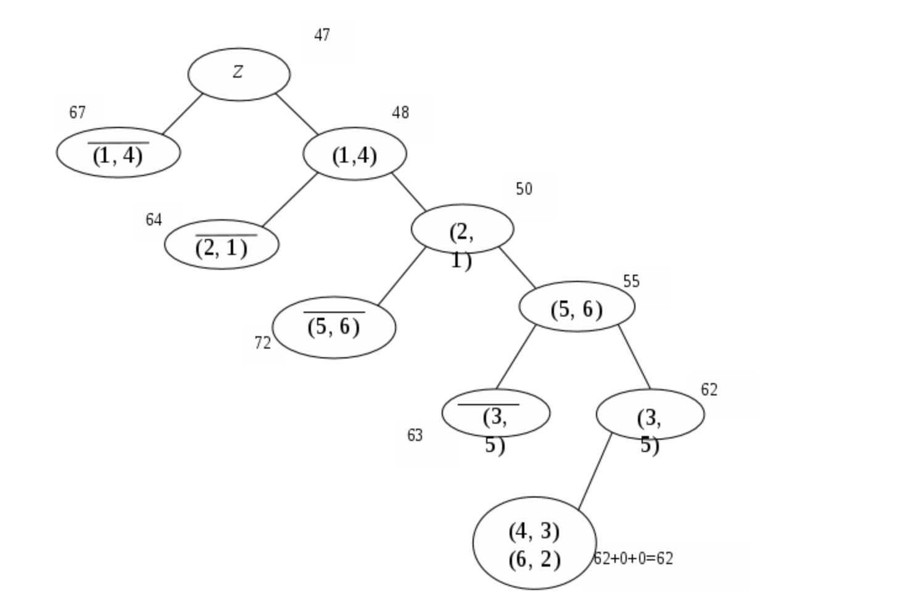

7. Методическое пособие¶
- Date
2020
7.1. Графический метод решения задач линейного программирования¶
7.1.1. Теоретические основы решения задач линейного программирования графическим методом¶
7.1.1.1. Основные понятия и определения линейного программирования¶
Линейное программирование (ЛП) – раздел математического программирования, в котором изучаются методы решения задач на нахождение экстремальных (наибольших и наименьших) значений линейной функции конечного числа переменных, на неизвестные которой наложены линейные ограничения.
Линейная функция называется целевой, а ограничения, которые представляют количественные соотношения между переменными, выражающие условия и требования экономической задачи и математически записываются в виде уравнений или неравенств, называются системой ограничений.
С помощью задач линейного программирования решается широкий круг вопросов планирования экономических процессов, где ставится цель поиска наилучшего решения. В качестве целевой функции могут рассматриваться, например, прибыль от реализации (должна быть максимальной) или издержки производства (должны быть минимальными).
Математическое выражение целевой функции и ее ограничений называется математической моделью экономической задачи и записывается в общем виде как
L(\({\overline{x}}\))=\({c_1x_1+c_2x_2+...+c_{ij}x_{ij}+...+c_nx_n}\)\(\rightarrow{max(min)}\)
при ограничениях:
где \(x_j\) — неизвестные; \(a_{ij}\), \(b_i\), \(c_j\) — заданные постоянные величины. Все или некоторые уравнения системы ограничений могут быть записаны также в виде неравенств. Математическая модель в более краткой записи имеет вид:
при ограничениях:
Совокупность значений неизвестных (\(x_1\), \(x_2\), …, \(x_n\)), удовлетворяющих системе ограничений, называется допустимым решением, или планом задачи линейного программирования, а ограничения определяют область допустимых решений (ОДР). Допустимое решение задачи линейного программирования называется оптимальным, если оно обеспечивает максимальное (минимальное) значение целевой функции.
Если все ограничения заданы уравнениями и переменные\(x_j\) неотрицательные, то модель называется канонической. Если хотя бы одно ограничение является неравенством, то модель называется неканонической.
7.1.1.2. Теоретические основы графического метода решения задач линейного программирования¶
Наиболее простым и наглядным методом решения задач линейного программирования является графический метод. Он применяется для задач линейного программирования с двумя переменными, когда ограничения выражены неравенствами, и задач со многими переменными при условии, что в их канонической записи содержится не более двух свободных переменных.
Графический метод основан на геометрическом представлении допустимых решений и целевой функции задачи. Каждое из неравенств задачи линейного программирования определяет на координатной плоскости (\(x_1\), \(x_2\)) некоторую полуплоскость. Пересечение этих полуплоскостей задает область допустимых решений (ОДР), то есть любая точка из этой области является решением системы ограничений.
В общем случае область допустимых решений может быть представлена одной из следующих фигур: выпуклым многоугольником, неограниченной многоугольной областью, лучом, отрезком, точкой или пустой областью. В последнем случае говорят, что ограничения не совместны. Если система ограничений включает равенства, то они определяют на координатной плоскости (\(x_1\), \(x_2\)) прямую линию. Область допустимых решений всегда представляет собой выпуклую фигуру.

С геометрической точки зрения в задаче линейного программирования ищется такая угловая точка или набор точек из допустимого множества решений, на которой достигается самая верхняя (нижняя) линия уровня, расположенная дальше (ближе) остальных в направлении наискорейшего роста.
Целевая функция задачи линейного программирования при фиксированном значении L определяет на плоскости прямую линию L=\({c_1x_1+c_2x_2}\). Изменяя значения L, получим семейство параллельных прямых, называемых линиями уровня.
где \(e_1\) и \(e_2\) — единичные векторы по осям О\(X_1\) и О\(X_2\). Таким образом,
Координатами вектора \({\overline{C}}\) являются коэффициенты целевой функции L(x).
7.1.1.3. Алгоритм решения задачи ЛП графическим методом¶
\({\qquad}\)1. Находим область допустимых решений системы ограничений задачи.
Для этого каждое из неравенств системы заменяем равенством и строим соответствующие этим равенствам граничные прямые. Каждая из построенных прямых делит плоскость на две полуплоскости. Чтобы графически определить, по какую сторону от граничной прямой располагается полуплоскость, содержащая решения, удовлетворяющие рассматриваемому неравенству, достаточно проверить одну какую-либо точку, не лежащую на прямой (например (0,0)). Если при подстановке ее координат в левую часть неравенства оно выполняется, то надо заштриховать полуплоскость, содержащую данную точку. Если же неравенство не выполняется, надо заштриховать полуплоскость, не содержащую данную точку. Отмечаем общую область для всех неравенств. Таким образом, получим область допустимых решений рассматриваемой задачи ЛП.
\({\qquad}\)2. Формируем графическое изображение целевой функции.
Приравняем целевую функцию к постоянной величине L: L=\({c_1x_1+c_2x_2}\). Это уравнение при фиксированном значении L определяет прямую, а при изменении L семейство параллельных прямых, каждая из которых называется линией уровня. Проводим линию уровня \({L_0}\).
\({\qquad}\)3. Определяем направление возрастания целевой функции (вектор \({\overline{C}}\)).
Для определения направления максимального возрастания значения целевой функции строим вектор-градиент целевой функции, который начинается в точке (0,0), заканчивается в точке (\({c_1x_1,c_2x_2}\)). Если линия уровня и вектор-градиент построены верно, то они будут перпендикулярны.
\({\qquad}\)4. Находим оптимальное решение задачи ЛП.
Линию уровня перемещаем по направлению вектора \({\overline{C}}\) для задач на максимум и в направлении, противоположном \({\overline{C}}\), для задач на минимум. Перемещение линии уровня производится до тех пор, пока у нее окажется только одна общая точка с областью допустимых решений (ОДР). Эта точка определяет единственное решение задачи ЛП и будет точкой экстремума. Если окажется, что линия уровня параллельна одной из сторон ОДР, то задача ЛП будет иметь бесчисленное множество решений. Если ОДР представляет неограниченную область, то целевая функция может быть неограниченна. Задача ЛП может быть неразрешима, когда определяющие ее ограничения окажутся противоречивыми.
\({\qquad}\)5. Находим координаты точки экстремума и значение целевой функции в этой точке.
Для вычисления координат оптимальной точки решим систему уравнений прямых, на пересечении которых находится эта точка. Подставляя найденный результат в целевую функцию, получим искомое оптимальное значение целевой функции.
7.1.2. Практическое применение графического метода решения задач линейного программирования¶
7.1.2.1. Пример решения задач линейного программирования графическим методом¶
Пример: Найти наибольшее значение функции L=\({x_1+x_2}\) при ограничениях:
\(x_1 \geq 0\) \(\qquad\) \(x_2 \geq 0\).
Решение: 1) Рассмотрим первое неравенство системы ограничений.
\({x_1+3x_2}\) \(\leq\) 6
Построим прямую: \({x_1+3x_2}\)=6.
Рассмотрим второе неравенство системы ограничений.
\({2x_1+x_2}\) \(\leq\) 8
Построим прямую: \({2x_1+x_2}\)=8.
3) Строим вектор \({\overline{C}}\)(1;1), координатами которого являются коэффициенты функции L.
4) Перемещаем линию уровня (красную прямую), перпендикулярно данному вектору, от левого нижнего угла к правому верхнему.
В точке, в которой линия уровня в первый раз пересечет область допустимых решений, функция L достигает своего наименьшего значения.
В точке, в которой линия уровня в последний раз пересечет область допустимых решений, функция L достигает своего наибольшего значения.
Функция L достигает наибольшего значения в точке A.
Точка A одновременно принадлежит прямым (1) и (2). Составим систему уравнений:
Вычислим значение функции L в точке A(\(\frac{18}{5};\frac{4}{5}\)).
L(A) = 1*\(\frac{18}{5}\) + 1*\(\frac{4}{5}\)=\(\frac{22}{5}\).
Ответ: \({x_1}=\frac{18}{5}\); \({x_2}=\frac{4}{5}\); \({L_{max}}=\frac{22}{5}\).
7.2. Симплекс метод¶
7.2.1. Введение дополнительных переменных в систему ограничений¶
В предыдущем параграфе для решения ОЗЛП был применен графический метод. В общем случае ОЗЛП решается с помощью симплекс-метода, к изложению которого мы сейчас и переходим.
Рассмотрим ОЗЛП с системой ограничений в следующей форме:
\(x_{n+1}\), \(x_{n+2}\), …, \(x_{n+m}\)
по формулам
\(x_{n+1}\), \(x_{n+2}\), …, \(x_{n+m}\) исключена из всех уравнений, за исключением одного уравнения, в котором коэффициент при ней равен 1.
7.2.2. Преобразование системы уравнений методом полных жордановых исключений¶
Заметив, что мы ввели дополнительные переменные в систему ограничений таким образом, что при любом допустимом плане они оказались неотрицательными числами, перейдем к преобразованию системы уравнений с помощью метода, который носит название метода полных жордановых исключений.
Для системы уравнений назовем переменные \(x_1\), \(x_2\), …, \(x_n\) свободными, а переменные \(x_{n+1}\), \(x_{n+2}\), …, \(x_{n+m}\) - базисными.
Разделение переменных на свободные и базисные является условным, поскольку систему уравнений можно переписать в другом (эквивалентном) виде, где наборы свободных и базисных переменных будут иными. В частности, можно поменять ролями какую - нибудь свободную переменную \(x_r\) с некоторой базисной переменной. С этой целью совершим следующие операции:
Рассмотрим какое-нибудь уравнение системы, в котором коэффициент \(a_{sr}\) при переменной \(x_{r}\) отличен от 0 (это уравнение с номером s).
Разделим это уравнение на \(a_{sr}\). Тогда в нем коэффициент при пере- менной \(x_{r}\) станет равным 1.
- Вычтем из каждого i-го уравнения системы (i:math:nes) уравнение с номером s, умноженное на \(a_{sr}\).В результате переменная \(x_{r}\) будет исключена из всех уравнений системы, кроме уравнения с номером s, и станет базисной, а переменная \(x_{n+s}\) станет свободной.
Описанный процесс носит название полного жорданова исключения с разрешающим элементом \(a_{sr}\). Коэффициенты s-го уравнения системы называются разрешающей строкой, а элементы r-го столбца матрицы системы уравнений - разрешающим столбцом.
Удобный алгоритм пересчета коэффициентов системы уравнений при проведении полного жорданова исключения с разрешающим элементом \(a_{sr}\) состоит в следующем (здесь и далее верхний индекс «н» соответствует новому значению элемента матрицы, а верхний индекс «с» - старому значению):
Разделим элементы разрешающей строки на разрешающий элемент. При этом разрешающий элемент станет равным 1;
Все элементы разрешающего столбца, за исключением разрешающего элемента, заменим нулями. При этом разрешающий элемент останется равным 1.
Все остальные элементы матрицы пересчитаем в новые элементы
\(a_{ij}^H\)=\(\frac{a_{ij}^C \cdot a_{sr}^C-a_{sj}^C\cdot a_{ir}^C}{a_{sr}^C}\)
воспользовавшись «правилом прямоугольника»
В случае, когда в разрешающей строке (разрешающем столбце) есть нули, правило прямоугольника приводит к тому, что элементы столбцов (строк), пересекающих эти нули, остаются без изменения.
7.2.3. Понятие опорного плана¶
Базисным решением ОЗЛП называется такое решение системы уравнений, в котором все свободные переменные равны 0.
Базисное решение ОЗЛП называется опорным решением (опорным планом), если в нем все базисные переменные неотрицательны.
В теории симплекс-метода доказывается, что, если максимум целевой функции при данной в ОЗЛП системе ограничений существует, то он достигается на опорном решении.
Опорное решение, на котором целевая функция достигает максимума, является оптимальным планом.
Замечание. Не следует думать, что ОЗЛП всегда имеет решение. Система ограничений, например, может быть противоречивой и задавать пустое множество решений. Система ограничений может также задавать неограниченное множество, на котором функция прибыли является неограниченной.
7.2.4. Расчетный алгоритм симплекс-метода¶
Алгоритм симплекс-метода состоит из нескольких этапов: сначала происходит построение одного из опорных решений, а затем - «улучшение» этого решения, т.е. переход к другим опорным решениям, на которых значениецелевой функции не уменьшается. Для проведения расчетов используются симплекс-таблицы, составленные по коэффициентам системы, а процесс поиска и улучшения опорного решения заключается в пересчете элементов этих таблиц методом полных жордановых исключений.
7.2.4.1. Первый этап алгоритма. Формирование симплекс-таблицы¶
Составим первую симплекс-таблицу по системе и целевой функции.
:ma th: x_ 2 |
… |
:ma th: x_ n |
:ma th: x_ {n+ 1} |
:ma th: x_ {n+ 2} |
… |
:ma th: x_ {n+ m} |
:ma th: s um |
|||
|---|---|---|---|---|---|---|---|---|---|---|
:ma th: x_ {n+ 1} |
:ma th: b_ 1 |
:ma th: a_ {11 } |
:ma th: a_ {12 } |
… |
:ma th: a_ {1n } |
1 |
0 |
… |
0 |
|
:ma th: x_ {n+ 2} |
:ma th: b_ 2 |
:ma th: a_ {12 } |
:ma th: a_ {22 } |
… |
:ma th: a_ {1n } |
0 |
1 |
0 |
||
… |
… |
… |
… |
… |
… |
… |
… |
… |
||
:ma th: x_ {n+ m} |
:ma th: b_ m |
:ma th: a_ {m1 } |
:ma th: a_ {m2 } |
… |
:ma th: a_ {mn } |
0 |
0 |
… |
1 |
|
z |
:ma th: c_ 0 |
-:m ath :c _1 |
-:m ath :c _2 |
… |
-:m ath :c _n |
0 |
0 |
… |
0 |
|
:ma th: p hi |
:ma th: p hi_ 0 |
:ma th: p hi_ 1 |
:ma th: p hi_ 2 |
… |
:ma th: p hi_ n |
:ma th: p hi_ {n+ 1} |
:ma th: p hi_ {n+ 2} |
… |
:ma th: p hi_ {n+ m} |
Для каждого уравнения системы в первом столбце таблицы указывается соответствующая базисная переменная. Строка z называется целевой строкой. Строка \(\varphi\) добавляется в таблицу лишь в случае поиска опорного решения и называется фиктивной целевой строкой. Последний столбец таблицы (столбец \(\Xi\)) организован для контроля правильности вычислений, и в каждой его клетке будем записывать суммы чисел, стоящих в строке.
Таблице соответствует базисное решение системы вида
\(x_1\)=\(x_2\)=…=\(x_n\)=0, \(x_{n+1}\)=\(b_1\), \(x_{n+2}\)=\(b_2\), …, \(x_{n+m}\)=\(b_m\).
Возможны два случая:
Все числа \(b_1\), \(b_2\), …, \(b_m\) неотрицательны, т.е. решение является опорным. В этом случае строку \(\varphi\) в таблице не заводим и сразу переходим ко 2-му этапу.
Среди чисел \(b_1\), \(b_2\), …, \(b_m\) существуют отрицательные, т.е. решение не является опорным. Тогда для построения опорного решения запишем в строку \(\varphi\) сумму тех строк таблицы, где стоят отрицательные значения \(b_i\), а затем перейдем к анализу и улучшению решения по фиктивной целевой строке \(\varphi\).
7.2.4.2. Второй этап алгоритма. Анализ решения по целевой (фиктивной целевой) строке симплекс-таблицы¶
Рассмотрим элементы целевой (фиктивной целевой) строки, стоящие в столбцах \(x_1\), …, \(x_{n+m}\). Если среди них имеется хотя бы один отрицательный элемент, то решение надо улучшать по правилам этапа 3.
Если же все указанные элементы неотрицательны, то в случае, когда анализируется опорное решение по целевой строке z, это означает, что на этом решении функция z достигает максимума и нужно переходить к выписыванию соответствующего оптимального плана (этап 4).
В случае поиска опорного решения (анализ по фиктивной целевой строке \(\varphi\)) вся строка \(\varphi\) должна состоять из нулей, иначе система ограничений противоречива, и ОЗЛП не имеет решения. Получение же нулевой строки \(\varphi\) свидетельствует о том, что опорное решение построено. В этом случае фиктивная целевая строка удаляется из таблицы, а решение анализируется по целевой строке z.
7.2.4.3. Третий этап алгоритма. Улучшение решения по целевой (фиктивной целевой) строке симплекс-таблицы¶
Найдем среди элементов \(z_1\), \(z_2\), …, \(z_n\) целевой строки z (или среди элементов \(\phi_1\), \(\phi_2\), …, \(\phi_n\) в случае фиктивной целевой строки \(\phi\)) наибольший по абсолютной величине отрицательный элемент. Пусть это будет элемент \(z_r\) (или \(\phi_r\)), тогда столбец \(x_r\) объявим разрешающим.
Найдем среди дробей вида \(\frac{b_i}{a_{ir}}\) (i=1,2,…, m) наименьшую неотрицательную дробь (пусть это будет дробь \(\frac{b_s}{a_{sr}}\)), и объявим строку \(x_{n+s}\) разрешающей. Если же все дроби вида \(\frac{b_i}{a_{ir}}\) окажутся отрицательными, то это означает, что при заданной системе ограничений функция z неограничена,т.е. поставленная ОЗЛП решений не имеет.
Элемент \(a_{sr}\), стоящий на пересечении разрешающей строки и разрешающего столбца, объявим разрешающим, и, для наглядности, его можно обвести в таблице прямоугольником.
Замечание. Иногда существует несколько возможностей выбора разрешающего элемента. В этом случае для поиска опорного решения разрешающий элемент выбирают отрицательным.
Заготовим новую симплекс-таблицу, заменив в первом столбце переменную \(x_{n+s}\) на переменную \(x_r\).
Пересчитаем все элементы старой симплекс-таблицы, включая строки z и \(\phi\), а также столбец \(\sum\), по правилам метода полных жордановых исключений с разрешающим элементом \(a_{sr}\). Результат запишем в новую симплекс-таблицу.
Контроль правильности вычислений осуществляем при помощи сравнений сумм элементов каждой строки с числами, записанными в последнем столбце \(\sum\). Расхождение результатов свидетельствует об арифметической ошибке, и соответствующую строку надо пересчитать.
После этого возвращаемся к этапу 2.
7.2.4.4. Четвертый этап алгоритма. Запись оптимального плана¶
В плане указываем значения только исходных переменных \(x_1\), \(x_2\), …, \(x_n\), причем значения тех из них, которые являются свободными, полагаем равными нулю, а значения остальных переменных берем из второго столбца таблицы (столбца свободных членов). Из этого же столбца выписываем максимальное значение z.
7.2.5. Практическое применение симплекс-метода¶
7.2.5.1. Пример решения типовой задачи с помощью симплекс-метода¶
Задача: Составляется комбинированный корм из трех злаков: кукурузы, овса и ржи. Калорийность и содержание витамина С в одном кг каждого злака, а также цена одного кг каждого злака указаны в следующей таблице 1:
Рожь |
|||
|---|---|---|---|
Ккал |
200 |
175 |
100 |
Витамин С (г) |
5 |
1 |
3 |
Цена (руб.) |
6 |
4 |
1 |
Требуется составить наиболее дешевый комбинированный корм, 1кг которого содержал бы не менее 125 ккал и не менее 2 г витамина С. Решение: Обозначим содержание кукурузы, овса и ржи в 1кг комбикорма символами \(x_1\), \(x_2\) и \(x_3\) (кг), соответственно. По условию задачи эти переменные удовлетворяют следующей системе ограничений:
R=6\(x_1\)+4\(x_2\)+\(x_3 \to\) min.
Решим поставленную задачу с помощью симплекс-метода. Для этого перепишем систему ограничений в следующем виде:
систему в систему уравнений
из второго и третьего уравнений:
z=-6\(x_1\)-4:math:x_2-\(x_3\)=-1-5\(x_1\)-3:math:x_2 tomax.
Составим первую симплекс-таблицу (Таблица 2).
\(x_2\) |
\(x_3\) |
\(x_4\) |
\(x_5\) |
\(\sum\) |
|||
|---|---|---|---|---|---|---|---|
\(x_3\) |
1 |
1 |
1 |
1 |
0 |
0 |
4 |
\(x_4\) |
-1 |
-4 |
-3 |
0 |
1 |
0 |
-7 |
\(x_5\) |
1 |
-2 |
2 |
0 |
0 |
1 |
2 |
z |
-1 |
5 |
3 |
0 |
0 |
0 |
7 |
\(\phi\) |
-1 |
-4 |
-3 |
0 |
1 |
0 |
-7 |
Поскольку базисное решение
\(x_1\)=\(x_2\)=0, \(x_3\)=1, \(x_4\)=-1, \(x_5\)=1
не является опорным (\(x_4\)<0), то для поиска опорного решения в симплекстаблицу добавляется фиктивная целевая строка \(\phi\), в которую записывается строка \(x_4\).
В столбец \(\sum\) запишем суммы чисел, стоящие по строкам таблицы.
В строке \(\phi\) среди чисел -4, -3, 0, 1, 0 наибольшим по абсолютной величине отрицательным числом является число -4, поэтому разрешающим столбцом объявляем столбец \(x_1\). Для элементов таблицы, расположенных в строках \(x_3\), \(x_4\) и \(x_5\), рассмотрим дроби
\(\frac{1}{1}\)=1, \(\frac{-1}{-4}\)=0,25 и \(\frac{1}{-2}\)=-0,5
числители которых являются элементами второго столбца таблицы, а знаменатели - элементами разрешающего столбца. Наименьшей неотрицательной дробью является дробь 0,25, поэтому строка \(x_4\) объявляется разрешающей строкой. Таким образом, элемент таблицы, стоящий на пересечении строки \(x_4\) и столбца \(x_1\) (число -4) является разрешающим элементом.
Теперь пересчитаем все элементы Таблицы 2 по правилам метода полных жордановых исключений с разрешающим элементом -4. Получим следующую Таблицу 3:
x_2 |
x_3 |
x_4 |
x_5 |
sum |
|||
|---|---|---|---|---|---|---|---|
x_3 |
0,75 |
0 |
0,25 |
1 |
0,25 |
0 |
2,25 |
x_4 |
0,25 |
1 |
0,75 |
0 |
-0,25 |
0 |
1,75 |
x_5 |
1,5 |
0 |
3,5 |
0 |
-0,5 |
1 |
5,5 |
z |
-2,25 |
0 |
-0,75 |
0 |
1,25 |
0 |
-1,75 |
phi |
0 |
0 |
0 |
0 |
0 |
0 |
0 |
Так как строка \(\phi\) стала нулевой, то опорное решение получено. Исключим строку \(\phi\) из таблицы и проведем анализ по целевой строке z.
Среди чисел 0; -0,75; 0; 1,25; 0 наибольшим по абсолютной величине отрицательным числом является число -0,75, поэтому разрешающим столбцом объявляем столбец \(x_2\). Для элементов таблицы, расположенных в строках \(x_3\), \(x_1\), и \(x_5\), рассмотрим дроби
\(\frac{0,75}{0,25}\)=3, \(\frac{0,25}{0,75}\)=\(\frac{1}{3}\) и \(\frac{1,5}{3,5}\)=\(\frac{3}{7}\)
числители которых являются элементами второго столбца таблицы, а знаменатели - элементами разрешающего столбца. Наименьшей неотрицательной дробью является дробь \(\frac{1}{3}\), поэтому строка \(x_1\) объявляется разрешающей строкой.
Таким образом, элемент таблицы, стоящий на пересечении строки \(x_1\) и столбца \(x_2\) (число 0,75) является разрешающим элементом.
Теперь пересчитаем все элементы Таблицы 3 в новую симплекс-таблицу по правилам метода полных жордановых исключений с разрешающим элементом 0,75. Получим следующую Таблицу 4:
x_2 |
x_3 |
x_4 |
x_5 |
sum |
|||
|---|---|---|---|---|---|---|---|
x_3 |
`frac {2}{3} ` |
-:math :fra c{1}{3 } |
0 |
1 |
`frac {1}{3} ` |
0 |
`frac {5}{3} ` |
x_4 |
`frac {1}{3} ` |
`frac {4}{3} ` |
1 |
0 |
-:math :fra c{1}{3 } |
0 |
`frac {7}{3} ` |
x_5 |
`frac {2}{3} ` |
-:math :fra c{28}{ 3} |
0 |
0 |
`frac {4}{3} ` |
2 |
-:math :fra c{16}{ 3} |
z |
-2 |
1 |
0 |
0 |
1 |
0 |
0 |
В строке z среди чисел 1; 0; 0; 1; 0 нет отрицательных. Значит, максимум z достигнут, и можно выписать оптимальный план:
\(x_1\)=0, \(x_2\)=\(\frac{1}{3}\), \(x_3\)=\(\frac{2}{3}\)
Максимальное значение целевой функции z равно -2, а минимальное значение функции затрат R равно 2.
Ответ: Оптимальным является комбикорм, состоящий на \(\frac{1}{3}\) из овса и на \(\frac{2}{3}\) изо ржи.
7.3. Транспортная задача¶
7.3.1. Постановка транспортной задачи. Транспортная таблица¶
Транспортная задача - это математическая задача линейного программирования специального вида о поиске оптимального распределения однородных объектов с минимизацией затрат на перемещение.
Имеется \({m}\) поставщиков \(A_1\), \(A_2\), …, \(A_m\), у которых сосредоточены запасы одного и того же груза в количестве \(a_1\), \(a_2\), …, \(a_m\) единиц, соответственно. Этот груз нужно доставить \({n}\) потребителям \(B_1\), \(B_2\), …, \(B_n\), заказавшим \(b_1\), \(b_2\), …, \(b_n\) единиц этого груза, соответственно. Известны также все тарифы перевозок груза \(c_{ij}\) (стоимость перевозок единицы груза) от поставщика \(A_i\) к потребителю \(B_j\). Требуется составить такой план перевозок, при котором общая стоимость всех перевозок была бы минимальной.
Условие транспортной задачи удобно записать в виде следующей Транспортной таблицы 1.1.
Транспортная таблица 1
\(B_ 1\) |
\(B_ 2\) |
… |
\(B_ n\) |
||
latex
{3-6} |
\(b_ 1\) |
\(b_ 2\) |
… |
\(b_ n\) |
|
\(A_ 1\) |
\(a_ 1\) |
\(c_ {11}\) |
\(c_ {12}\) |
… |
\(c_ {1n}\) |
\(A_ 2\) |
\(a_ 2\) |
\(c_ {21}\) |
\(c_ {22}\) |
… |
\(c_ {2n}\) |
… |
… |
… |
… |
… |
… |
\(A_ m\) |
\(a_ m\) |
\(c_ {m1}\) |
\(c_ {m2}\) |
… |
\(c_ {mn}\) |
Обозначим суммарный запас груза у всех поставщиков символом a, а суммарную потребность в грузе у всех потребителей – символом b.
Тогда
\({\qquad}\)1) Транспортная задача называется закрытой,если a=b.Еслиже \(a \neq b\), то транспортная задача называется открытой.
Далее будет показано, что в случае закрытой задачи от поставщиков будут вывезены все запасы груза, и все заявки потребителей будут удовле- творены.
В случае открытой задачи при a<b весь груз будет вывезен, однако будут недопоставки груза экономически невыгодным потребителям. При a>b , наоборот, будут удовлетворены все потребители, но часть груза останется на складах экономически невыгодных поставщиков.
\({\qquad}\)3) Матрица X с неотрицательными элементами \(x_{ij}\) называется планом перевозок.
\({\qquad}\)4) Функция Z называется целевой функцией.
Математическая формулировка транспортной задачи заключается в нахождении плана перевозок X =\(x_{ij}\), который удовлетворяет системе ограничений
и доставляет минимум целевой функции Z.
\({\qquad}\)5) План перевозок, реализующий минимум целевой функции Z, называется оптимальным.
Смысл первой группы равенств в системе ограничений (см. п.4) состоит в том, что суммарное количество груза, отправленное всем потребителям каж- дым поставщиком, равно запасу груза у этого поставщика. Вторая группа ра- венств в системе ограничений (см. п.4) показывает, что суммарное количество груза, полученное каждым потребителем от всех поставщиков, равно заказу этого потребителя.
7.3.2. Сведение открытой транспортной задачи к закрытой¶
Решение транспортной задачи начинается с выяснения вопроса о том, является ли задача открытой или закрытой.
Если задача является открытой, то необходимо провести процедуру закрытия задачи. С этой целью при a<b добавляем фиктивного поставщика \(A'_{m+1}\) с запасом груза \(a'_{m+1}=b-a\). Если же a>b, то добавляем фиктивного потребителя \(B'_{n+1}\) с заказом груза \(b'_{n+1}=a-b\).
В обоих случаях соответствующие фиктивным объектам тарифы перевозок \(c'_{ij}\) полагаем равными нулю. В результате суммарная стоимость перевозок Z не изменяется.
7.3.3. Первоначальный план перевозок¶
Транспортная задача относится к задачам линейного программирования, и ее можно было бы решить симплекс-методом. Но поскольку система огра- ничений транспортной задачи проще, чем система ограничений ОЗЛП, то это дает возможность вместо использования объемных симплекс-таблиц применить более удобный метод, который состоит из следующих этапов:
\({\qquad}\)1. Составление первоначального плана перевозок.
\({\qquad}\)2. Последовательные улучшения плана перевозок (перераспределение поставок) до тех пор, пока план перевозок не станет оптимальным.
Решение ОЗЛП начинается с нахождения опорного плана. Для транспортной задачи такой план всегда существует. Опишем два метода составле- ния опорного плана (первоначального плана перевозок). При этом ненулевыеэлементы \(x_{ij}\) плана перевозок будем записывать в соответствующие пустые клетки транспортной таблицы с исходными данными задачи, а символом (i, j) будем обозначать клетку таблицы, содержащую информацию о перевозках груза от поставщика \(A_i\) к потребителю \(B_j\).
7.3.3.1. Составление первоначального плана перевозок с помощью метода северо-западного угла¶
Составление первоначального плана перевозок начнем с перевозки запасов поставщика \(A_1\). Будем за счет его запасов максимально возможно удовлетворять заказы сначала потребителя \(B_1\), затем \(B_2\) и так далее. Таким образом, мы будем заполнять таблицу, начиная с клетки (1,1), и двигаться вправо по строке до тех пор, пока остаток запасов поставщика \(A_1\) не окажется меньше заказа очередного потребителя. Для выполнения этого заказа используем остатки запаса первого поставщика, а недостающую часть добавим из запасов поставщика \(A_2\), то есть переместимся на следующую строку таблицы по столбцу, соответствующему указанному потребителю. Далее аналогичным образом распределим запасы поставщика \(A_2\), затем \(A_3\) и так далее.
Проиллюстрируем это на следующем примере (Таблица 2).
Распределяя запасы поставщика \(A_1\) сначала потребителю \(B_1\), а затем \(B_2\), получаем: \(x_{11}\)=100, \(x_{12}\)=40. После этого у поставщика \(A_1\) остается еще 20 единиц груза, а потребителю \(B_3\) нужно 80 единиц. Удовлетворим спрос поребителя \(B_3\), отправив ему 20 единиц груза, оставшихся у поставщика \(A_1\), 30 единиц груза от поставщика \(A_2\) и 30 единиц груза от \(A_3\). Следовательно,
\(x_{13}\)=20, \(x_{23}\)=30 и \(x_{33}\)=30,
причем у поставщика \(A_3\) остается 60 последних единиц груза. Этот груз и отправим потребителю \(B_4\). Таким образом \(x_{34}\)=60, все запасы груза вывезены и все потребители удовлетворены.
Теперь мы можем подсчитать общую стоимость всех перевозок по данному плану:
Z=4\(\cdot\)100+8\(\cdot\)40+10\(\cdot\)20+2\(\cdot\)30+6\(\cdot\)30+5\(\cdot\)60=1460.
Изложенный метод северо-западного угла прост в реализации, однако трудно надеяться, что он даст экономичный первоначальный план, поскольку при распределении перевозок мы совершенно не учитывали их стоимость.
7.3.3.2. Составление первоначального плана перевозок с помощью метода наименьшей стоимости¶
Построение плана начнем с клетки с наименьшим тарифом перевозок. При наличии нескольких клеток с одинаковыми тарифами выберем любую из них. Пусть это будет клетка (i, j) . Запишем в эту клетку элемент \(x_{ij}\)=min(\(a_i\),\(b_j\)). Если \(a_i\)<\(b_j\), то запасы поставщика \(A_i\) исчерпаны, а потребителю \(B_j\) требуется еще \(b'_j=b_j-a_i\) единиц груза. Поэтому, не принимая более во внимание i-ю строку, снова ищем клетку с наименьшей стоимостью перевозок и заполняем ее с учетом изменившихся потребностей. В случае \(a_i\)>\(b_j\) из рассмотрения исключается j-й столбец, а запасы \(A_i\) полагаются равными \(a'_i=a_i-b_j\). Продолжаем этот процесс до тех пор, пока все запасы не будут исчерпаны, а все потребности удовлетворены.
Необходимо отметить, что при наличии в таблице клеток с одинаковыми тарифами, планы, полученные с помощью этого метода, могут быть разными, однако они, несомненно, ближе к оптимальному плану, чем план, составленный по методу северо-западного угла.
Сформируем теперь первоначальный план по методу наименьшей стоимости для рассмотренного в параграфе 2.3.1 примера и сравним результаты (Таблица 3). Поскольку наименьший тариф (число 2) стоит в клетке (2,3), то запишем в эту клетку элемент \(x_{23}\)=30. Тогда \(b'_3\)=50, а 2-ю строку таблицы можно больше не учитывать. Среди оставшихся клеток имеются три клетки с наименьшим тарифом перевозок, равным 4: (1,1); (3,1) и (3,2). Выберем, например, клетку (1,1) и запишем в нее число \(x_{11}\)=100. Получаем, что \(a'_1\)=60, а 1-й столбец таблицы больше не рассматриваем. Теперь наименьший тариф, равный 4, проставлен в клетке (3,2), поэтому \(x_{32}\)=40, \(b'_3\)=50 и 2-й столбец больше не нужен. Далее выбираем клетку (1,4) с тарифом 5 и пишем в нее \(x_{14}\)=60. Исключив из рассмотрения сразу 1-ю строку и 4-ый столбец (поскольку \(a'_1\)=\(b_4\)= 60), переходим к последней клетке (3,3), в ко- торую записываем перевозку \(x_{33}\)=50.
Найдем суммарную стоимость перевозок по этому плану:
Z=4\(\cdot\)100+5\(\cdot\)60+2\(\cdot\)30+4\(\cdot\)40+6\(\cdot\)50=1220.
Сравнивая это значение со стоимостью плана, полученного по методу северо-западного угла, видим, что 1220<1460, то есть мы получили более выгодный план перевозок.
7.3.4. Вырожденные планы. Циклы и пополнение плана¶
Прежде, чем перейти к анализу оптимальности планов и способам их улучшения, выясним, каким требованиям должны удовлетворять составляемые планы. Для этого вернемся к системе ограничений
В соответствии с определением плана перевозок у матрицы X=\(x_{ij}\) сумма элементов i-й строки равняется \(a_i\), i=1,2,…,m, а сумма элементов j-о столбца равняется \(b_j\) , j=1,2,…,n. Условие закрытости транспортной задачи a=b означает, что среди m+n уравнений системы независимыми являются только m+n-1 уравнений, поэтому в любом базисном решении этой системы должно быть m+n-1 базисных переменных. Поскольку свободные переменные в таком решении равны нулю, то в транспортной таблице им будут соответствовать пустые клетки.
Клетки таблицы, в которые записаны отличные от нуля перевозки, называются базисными, а остальные (пустые) - свободными;
План называется вырожденным, если количество базисных клеток в нем меньше, чем m+n-1. Если на каком-то этапе решения получился вырожденный план, то его необходимо пополнить, проставив в недостающем числе клеток нулевую перевозку и превратив, тем самым, эти клетки в базисные. Общий баланс и суммарная стоимость перевозок плана при этом не изменятся. Однако проводить пополнение плана, выбирая клетки произвольно, нельзя. Приведем условия, которым должен соответствовать пополненный план.
Циклом в транспортной таблице называется несколько клеток, соединенных замкнутой ломаной линией так, чтобы две соседние вершины ломаной были расположены либо в одной строке, либо в одном столбце. Ломаная линия может иметь точки самопересечения, но не в клетках цикла.
План называется ациклическим, если его базисные клетки не содержат циклов. Доказано, что оптимальные планы являются ациклическими, поэтому и первоначальный план также должен удовлетворять этому требованию. Заметим, что планы, полученные с помощью метода северо-западного угла и метода наименьшей стоимости, ациклические. Однако если план оказался вырожденным, то при его пополнении требование ацикличности необходимо учитывать.
7.3.5. Проверка оптимальности плана и перераспределение поставок с помощью метода потенциалов¶
Для анализа полученных планов и их последующего улучшения удобно ввести дополнительные характеристики пунктов отправления и назначения, называемые потенциалами.
7.3.5.1. Вычисление потенциалов¶
Сопоставим каждому поставщику \(A_i\) и каждому потребителю \(B_j\) величины \(u_i\) и \(v_j\) соответственно так, чтобы для всех базисных клеток плана были выполнены соотношения
\(u_i\)+\(v_j\)=\(c_{ij}\), i=1,2,…,m, j=1,2,…,n.
Поскольку число базисных клеток в плане равно m+n-1 (вырожденные планы должны быть предварительно пополнены), то для определения потенциалов получается система из m+n-1 уравнений с m+n неизвестными. Такая система имеет бесконечное множество решений. Нам требуется любое ее решение. Обычно для простоты полагают один из потенциалов равным нулю и затем вычисляют остальные. В транспортной таблице для потенциалов \(v_1\), \(v_2\), …, \(v_n\) заводится дополнительные строка, а для потенциалов \(u_1\), \(u_2\), …, \(u_n\) – дополнительный столбец, куда проставляются найденные значения.
7.3.5.2. Проверка оптимальности плана¶
Для каждой свободной клетки плана вычислим разности \(\Delta c_{ij}\)=\(c_{ij}\)-(\(u_i\)+\(v_j\)) и запишем полученные значения в левых нижних углах соответствующих клеток. Заметим, что для базисных клеток выполнено соотношение \(\Delta c_{ij}\)=0, и этим фактом можно пользоваться для контроля правильности нахождения потенциалов.
План является оптимальным, если все разности \(\Delta c_{ij} \geq 0\).
В противном случае план можно улучшить следующим способом.
7.3.5.3. Перераспределение поставок¶
Найдем клетку с наибольшей по абсолютной величине отрицательной разностью \(\Delta c_{ij}\) и построим цикл, в котором кроме этой клетки все остальные являются базисными. Такой цикл всегда существует и единственен.
Заметим, что в новом плане суммы элементов по строкам и столбцам должны остаться прежними, поэтому изменение значения в одной клетке цикла повлечет за собой соответствующие изменения значений во всех остальных клетках этого цикла. Так как в свободной клетке значение будет увеличено, то проставим в ее правом нижнем углу знак \(\oplus\). Теперь пройдем по всей ломаной цикла, проставляя в правых нижних углах клеток поочередно знаки \(\oplus\) и \(\ominus\).
Груз будет перераспределен по клеткам цикла на величину \(\Delta x\)=min\(x_{ij}\) следующим образом. В клетках со знаком «плюс» значение перевозки нужно увеличить на величину \(\Delta x\), а в клетках со знаком «минус» – уменьшить на величину \(\Delta x\). Так как после пересчета у нас добавилась лишняя базисная клетка, то их количество необходимо сократить, убрав нуль в одной из клеток цикла. Если таких клеток получилось несколько, то свободной делаем ту из них, в которой тариф перевозок максимален.
После этого полученный план проверяется на оптимальность описанным выше способом. Перераспределение груза производится до тех пор, пока очередной план не станет оптимальным. На этом действие алгоритма завершается.
Покажем, как нужно пользоваться методом потенциалов, на примере первоначального плана, полученного выше по методу северо-западного угла.
Поскольку \(\Delta c_{14}\)=-4<0, то этот план не является оптимальным. Перераспределим груз по циклу, обозначенному в Tаблице 4 пунктиром, на величину \(\Delta x\)= min(20,60)=20. Для этого в клетках со знаком «плюс» увеличим поставки на 20 единиц, а клетках со знаком «минус» – поставки на столько же уменьшим. Для сохранения количества базисных клеток число 0 в клетке (1,3) не записываем, и она становится свободной.
Вычислив потенциалы и разности \(\Delta c_{ij}\) для нового плана, видим, что снова есть отрицательная разность \(\Delta c_{32}\)=-4. Поэтому придется еще раз улучшать план. С этой целью перераспределим груз по циклу, отмеченному в таблице 5 пунктиром, на величину \(\Delta x\)= min(40,40)=40. Так как в результате в цикле получаются две клетки с нулевыми перевозками: (1,3) и (3,4) , то сделаем свободной клетку (1,3), поскольку ее тариф перевозок больше. После перераспределения груза по циклу вычислим все необходимые разности \(\Delta c_{ij}\).
Как видим, все \(\Delta c_{ij}\) неотрицательны, значит, план оптимален (Tаблица 6).
7.3.6. Практическое применение транспортной задачи¶
7.3.6.1. Пример решения транспортной задачи¶
Пример: На складах трех поставщиков \(A_1\), \(A_2\), \(A_3\) хранится 300, 250 и 200 единиц одного и того же груза. Этот груз требуется доставить четырем потребителям \(B_1\), \(B_2\), \(B_3\) и \(B_4\), заказы которых составляют 220, 150, 250 и 180 единиц груза соответственно. Стоимости перевозок \(c_{ij}\) единицы груза с i-го склада j-му потребителю указаны в правых верхних углах соответствующих клеток транспортной Таблицы 1.
Составить такой план перевозок груза, при котором общая стоимость всех перевозок была бы минимальной.
Решение: Поскольку суммарный запас груза а=300+250+200=750 меньше суммарной потребности b=220+150+250+180=800, то рассматриваемая транспортная задача является открытой. Сведем ее к закрытой, добавив фиктивного поставщика \(A'_4\) с нулевыми тарифами перевозок и запасом груза \(a'_4\)=b-a=50. Составим первоначальный план перевозок с помощью метода наименьшей стоимости, заполняя клетки в следующем порядке - получаем Таблицу 2:
(4,2) \(\rightarrow\) (3,2) \(\rightarrow\) (2,3) \(\rightarrow\) (3,4) \(\rightarrow\) (1,1) \(\rightarrow\) (1,4).
Перейдем к анализу полученного плана. Заметим, что в этой задаче m+n-1=4+4-1=7, а число занятых клеток в имеющемся плане равно 6. Значит, необходимо пополнить план еще 1 клеткой, записав в ней 0, так, чтобы пополненный план получился ациклическим. Выберем для этой цели, например, клетку (4,3).
Вычислим потенциалы по базисным клеткам плана и вычислим для свободных клеток разности
\(\Delta c_{ij}\)=\(c_{ij}\)-(\(u_i\)+\(v_j\)).
Получим таблицу 3.
Поскольку среди чисел \(\Delta c_{ij}\) есть отрицательные, то перераспределим груз на величину
\(\Delta x\)=min(80,100,0)=0
по циклу, обозначенному пунктиром. Клетка (1,3) станет базисной вместо клетки (4,3), и мы получим Таблицу 4. План, указанный в Таблице 4, не является оптимальным, поскольку
\(\Delta c_{22}\)= \(\Delta c_{44}\)=-1<0.
Улучшим этот план с помощью перераспределения поставок по циклу, обозначенному в Таблице 4 пунктиром, на величину
\(\Delta x\)=min(100,50)=50.
Получим Таблицу 4.
В Таблице 5 перераспределение осуществляется по ступенчатому циклу.
После еще одного перераспределения поставок на величину \(\Delta x\)=80 , получим Таблицу 6.
Заметим, что после каждого перераспределения груза производились вычисления потенциалов и разностей \(\Delta c_{ij}\) для полученного плана, и эти данные проставлялись в таблицу.
В Таблице 6 все разности \(\Delta c_{ij} \geq 0\), следовательно, план оптимален. Таким образом,
Фиктивный груз \(a'_4\)=50 в Таблице 6 означает, что потребителю \(B_4\) будет недопоставлено 50 единиц груза.
Найдем суммарную стоимость перевозок по оптимальному плану:
\(Z_{min}\)=\({ \sum_{i=1}^3 \sum_{j=1}^4 c_{ij}x_{ij}}\)=4\(\cdot\)220+3\(\cdot\)80+2\(\cdot\)80+1\(\cdot\)170+1\(\cdot\)70+2\(\cdot\)130=1780.
7.4. Задача о распределении средств¶
7.4.1. Общая схема метода динамического программирования¶
Метод динамического программирования дает возможность находить последовательные оптимальные решения в задачах, разделенных на этапы.
Изложим схему применения этого метода на следующей модели. Рассмотрим некоторую управляемую систему, которая может находиться в одном из нескольких состояний. На каждом этапе в результате применения управляющего воздействия (управления) система может изменить свое состояние или остаться в прежнем состоянии. Эффективность процесса управления характеризуется целевой функцией прибыли, зависящей от состояния системы и применяемого управления.
0 этап. В начальный момент времени система находится в исходном состоянии \(x_0\).
1 этап. В результате применения управления \(y_1\) система переходит из состояния \(x_0\) в состояние
\(x_1\)=\(g_1\)(\(x_0\),\(y_1\)),
при этом получается прибыль
\(h_1\)(\(x_0\),\(y_1\)),
2 этап. В результате применения управления \(y_2\) система переходит из состояния \(x_1\) в состояние
\(x_2\)=\(g_2\)(\(x_1\),\(y_2\)),
при этом получается прибыль
\(h_2\)(\(x_1\),\(y_2\)),
и так далее.
За N этапов получается последовательность состояний \(x_0\), \(x_1\), \(x_2\), …, \(x_n\) и последовательность управлений \(y_1\), \(y_2\), …, \(y_n\), где
\(x_{n+1}\)=\(g_n\)(\(x_n\),\(y_{n+1}\)), \({\qquad}\) n=\({\overline{0,N}}\),
а общая прибыль на каждом этапе вычисляется по формуле
\(J_n\)(\(x_0\), \(y_1\), …,\(y_n\))=\(h_1\)(\(x_0\), \(y_1\))+\(h_2\)(\(x_1\), \(y_2\))+…+\(h_n\)(\(x_{n-1}\), \(y_n\)), \({\qquad}\) n=\({\overline{1,N}}\),
Нашей целью является отыскание такой последовательности оптимальных управлений {\(y_1^*\), \(y_2^*\), …, \(y_N^*\)},чтобы функция прибыли \(J_n\) достигла максимума
\(J_n\)(\(x_0\), \(y_1^*\), …, \(y_N^*\))=max \(J_n\)(\(x_0\), \(y_1\), …,\(y_n\))
Принцип оптимальности Беллмана утверждает, что на последовательности оптимальных управлений {\(y_1^*\), \(y_2^*\), …, \(y_N^*\)} должна достигать максимума каждая из функций
- \(f_n\)(\(x_{n-1}\), \(y_n\), :math:`y_n
{n+1}`, …, \(y_N\))=\(h_n\)(\(x_{n-1}\),
\(y_n\))+\(h_{n+1}\)(\(x_n\), \(y_{n+1}\))+…+\(h_N\)(\(x_{N-1}\), \(y_N\)), \({\qquad}\) n=\({\overline{1,N}}\).
Если ввести обозначения
\(\varphi_n(x_{n-1})\)=max \(f_n\)(\(x_{n-1}\), \(y_n\), :math:`y_n
{n+1}`, …, \(y_N\)) \({\qquad}\)
n=\({\overline{1,N}}\),
то из принципа оптимальности Беллмана вытекает, что функции \(\varphi_n(x_{n-1})\) должны удовлетворять следующим функциональным уравнениям Беллмана:
\(\varphi_n(x_{n-1})\)=max[ \(\varphi_{n+1}(g_n(x_{n-1},y_n))+h_n(x_{n-1},y_n)\)] \({\qquad}\) n=\({\overline{1,N}}\).
Решение уравнений Беллмана позволяет найти последовательность оптимальных управлений и оптимальное значение функции прибыли.
Замечание. Для того, чтобы методом динамического программирования находить не максимум функции прибыли, как было изложено выше, а минимум функции затрат достаточно лишь заменить во всех соответствующих формулах настоящего параграфа максимум на минимум.
7.4.2. Практическое применение распределения средств¶
7.4.2.1. Пример решения задачи о распределении средств¶
Используем метод динамического программирования для решения следующей задачи.
Составить план распределения суммы в 4 миллиона долларов между тремя предприятиями \(\text{П}_1\), \(\text{П}_2\), \(\text{П}_3\), приносящий наибольшую прибыль, если в каждое из предприятий может быть вложено 1, 2, 3 или 4 миллиона долларов, а прибыль каждого из предприятий задана в Таблице 1:
\(\text{П}_1\) |
\(\text{П}_2\) |
\(\text{П}_3\) |
|
0 |
0 |
0 |
0 |
1 |
20 |
22 |
25 |
2 |
20 |
18 |
23 |
3 |
20 |
17 |
15 |
4 |
18 |
16 |
19 |
Решение: Пусть \(h_1\), \(h_2\), \(h_3\) - прибыли (млн.долл.) предприятий \(\text{П}_1\), \(\text{П}_2\), \(\text{П}_3\), соответственно. Тогда, пересчитывая данные из Таблицы 1, получим следующую Таблицу 2:
\(h_1\) |
\(h_2\) |
\(h_3\) |
|
0 |
0 |
0 |
0 |
1 |
0,2 |
0,22 |
0,25 |
2 |
0,4 |
0,36 |
0,46 |
3 |
0,6 |
0,51 |
0,45 |
4 |
0,72 |
0,64 |
0,76 |
Разобьем процесс выделения средств предприятиям на 3 этапа: на первом этапе выделяется \(y_1\) средств предприятию \(\text{П}_1\), на втором – \(y_2\) средств предприятию \(\text{П}_2\), на третьем – \(y_3\) средств предприятию \(\text{П}_3\).
Будем считать состоянием системы \(x_i\)(i=0,1,2,3) ту сумму средств, которая осталась нераспределенной после i-го этапа. Поскольку необходимо распределить все 4 миллиона долларов, то \(x_0\)=4. Тогда
\(x_n\)=\(x_{n-1}\)-\(y_n\), \({\qquad}\) n=1,2,3.
Заметим, что на третьем этапе выделения средств весь остаток \(x_2\) вкладывается в предприятие \(\text{П}_3\), поэтому
\(y_3\)=\(x_2\).
Воспользуемся уравнениями Беллмана для N=3. Тогда уравнения
\(\varphi_n(x_{n-1})\)=max[ \(\varphi_{n+1}(g_n(x_{n-1},y_n))+h_n(x_{n-1},y_n)\)] \({\qquad}\) n=\({\overline{1,N}}\).
примут следующий вид:
\(\varphi_3(x_2)\)=max \(h_3(y_3)\), \({\qquad}\) \(x_2\)=0,1,2,3,4,
\(\varphi_2(x_1)\)=max [\(h_2(y_2)+\varphi_3(x_1-y_2)\)], \({\qquad}\) \(x_1\)=0,1,2,3,4,
\(\varphi_1(x_0)\)=max [\(h_1(y_1)+\varphi_2(x_0-y_1)\)], \({\qquad}\) \(x_0\)=4.
Обозначим значения управлений \(y_1\), \(y_2\), \(y_3\), на которых достигается максимум в соотношениях, символами \(y_1^*\), \(y_2^*\), \(y_3^*\), соответственно, и, воспользовавшись Таблицей 2, заполним по формулам Таблицу 3:
0 |
0 |
0 |
0 |
||||
1 |
0,25 |
0,25 |
1 |
||||
2 |
0,46 |
0,46 |
2 |
||||
3 |
0,45 |
0,45 |
3 |
||||
4 |
0,76 |
0,76 |
4 |
Воспользовавшись Таблицей 2 и формулами, заполним Таблицу 4:
0 |
0+0 |
0 |
0 |
||||
1 |
0+0,25 |
0,22+0 |
0,25 |
0 |
|||
2 |
0+0,46 |
0,22+0,25 |
0,36+0 |
0,47 |
1 |
||
3 |
0+0,45 |
0,22+0,46 |
0,36+0,25 |
0,51+0 |
0,68 |
1 |
|
4 |
0+0,76 |
0,22+0,45 |
0,36+0,46 |
0,51+0,25 |
0,64+0 |
0,82 |
2 |
Воспользовавшись Таблицей 2 и формулой, заполним Таблицу 5:
0 |
1 |
2 |
3 |
4 |
|||
4 |
0+0,82 |
0,2+0,68 |
0,4+0,47 |
0,6+0,25 |
0,72+0 |
0,88 |
1 |
Из Таблицы 5 вытекает, что оптимальным управлением будет \(y_1^*\)=1, при этом оптимальная прибыль равна 0,88. Далее получаем
\(x_1\)=\(x_0-y_1^*\)=4-1=3, \(\varphi_2(x_1)\)=\(\varphi_2(3)\)=0,68, \(y_2^*\)=1;
\(x_2\)=\(x_1-y_2^*\)=3-1=2, \(\varphi_3(x_2)\)=\(\varphi_3(2)\)=0,46, \(y_3^*\)=2.
Таким образом, наиболее оптимальным является вложение в предприятия \(\text{П}_1\), \(\text{П}_2\), \(\text{П}_3\) денежных средств в размере 1, 1 и 2 миллионов долларов, соответственно. В этом случае прибыль будет максимальной и составит 0,88 миллиона долларов. Решение задачи завершено.
7.5. Задача о максимальном потоке¶
7.5.1. Постановка задачи о максимальном потоке¶
Задача о максимальном потоке заключается в нахождении такого потока по транспортной сети, что сумма потоков из истока, или, что то же самое, сумма потоков в сток максимальна.
Рассмотрим сеть, имеющую только один источник s и только один сток t. Рассмотрим задачу о потоке из узла s в узел t, причем s и t могут быть связаны произвольно сложной промежуточной сетью. Задача о максимальном потоке состоит в определении количества, которое можно перевезти из s в t.
7.5.2. Основные понятия¶
Сетью (flow network) называется ориентированный граф, каждому ребру (i,j) которого сопоставлено неотрицательное число C(i,j), называемое пропускной способностью, с двумя выделенными вершинами, называемыми исток s (source) и сток t (sink).
Необходимо знать следующие правила для решения задачи.
1. Будем считать, что если поток из вершины i к j равен \(\varphi_{ij}\), то противоположный поток равен -\(\varphi_{ij}\).
2. Если поток по дуге \(\varphi_{ij}\) меньше его пропускной способности, то есть \(\varphi_{ij}<C_{ij}\), то дуга называется ненасыщенной потоком, если же \(\varphi_{ij}=C_{ij}\), то дуга называется насыщенной потоком.
3. Из физического смысла грузопотока следует, что поток по каждой дуге не может превышать ее пропускную способность, т.е. \(\varphi_{ij} \leq C_{ij}\).
4. Для любой вершины, кроме источника и стока, количество вещества, поступающего в эту вершину, равно количеству вещества, вытекающего из него. Это условие называется условием сохранения потока, в промежуточных вершинах потоки не создаются и не исчезают – отсюда следует, что общее количество вещества, вытекающего из источника, совпадает с общим количеством вещества, поступающего в сток.
7.5.3. Разрез¶
Разрез определяет множество ребер, при удалении которых из сети полностью прекращается поток от источника к столу. Пропускная способность разреза равна сумме пропускных способностей разрезанных ребер. Среди всех разрезов сети разрез с минимальной пропускной способностью определяет максимальный поток в сети.
Пример:
Разрезы, представленные на Рисунке 3, имеют следующие пропускные способности:
Разрез |
«Разрезанные» ребра |
Пропускная способность |
|---|---|---|
1 |
(1, 2), (1, 3), (1, 4) |
10 + 30 + 20 = 60 |
2 |
(1, 3), (1, 4), (2, 3), (2, 5) |
30 + 10 + 40 + 30 = 110 |
3 |
(2, 5), (3, 5), (4, 5) |
30 + 20 + 20 = 70 |
Вывод, который можно сделать из этих трех разрезов, заключается в том, что максимальный поток не может превышать 60 единиц. Но мы не можем сказать, какой максимальный поток на самом деле, так как не перебрали все возможные разрезы сети. К сожалению, перебор всех разрезов является непростой задачей. Поэтому для определения максимального потока в сети не используются алгоритмы, основанные на полном переборе разрезов.
7.5.4. Алгоритм Форда-Фалкерсона нахождения максимального потока¶
Обнуляем все потоки.
В сети находим любой путь из источника в сток. Если такого пути нет, останавливаемся.
Пускаем через найденный путь максимально возможный поток:
На найденном пути в остаточной сети ищем ребро с минимальной пропускной способностью \(C_{min}\). (\(\beta\)=min \(C_{ij}\)>0)
Для каждого ребра на найденном пути увеличиваем поток на \(C_{min}\), а в противоположном ему — уменьшаем на \(C_{min}\). (\(\varphi_{ij}\)=\(\varphi_{ij} \pm C_{min}\))
Модифицируем остаточную сеть. Для всех рёбер на найденном пути, а также для противоположных им рёбер, вычисляем новую пропускную способность. Если она стала ненулевой, добавляем ребро к остаточной сети, а если обнулилась, стираем его. (\(C_{ij}\)=\(C_{ij}\)-\(C_{min}\))
Возвращаемся на шаг 2.
Величина максимального потока в транспортной сети T равна минимальной из пропускных способностей его сечений.
\(\varphi_{max}=\varphi_{max}+C_{ij}\)
7.5.5. Практическое применение максимального потока¶
7.5.5.1. Пример решения типовой задачи с помощью максимального потока¶
Пример:
Рассмотрим транспортную сеть T, пусть \(\varphi_0\) - нулевой поток.
Нашли путь (обозначен красным цветом)
\(P_1\)=s(s,a)a(a,b)b(b,d)d(d,t)t.
Нашли новый путь (обозначен синим цветом)
\(P_2\)=s(s,b)b(b,d)d(d,t)t.
Нашли еще один путь (обозначен зеленым цветом)
\(P_3\)=s(s,a)a(a,b)c(c,t)t.
Oтвет: \(\varphi_{max}\)=6.
7.6. Сетевое планирование¶
7.6.1. Понятие сети¶
Сетью называют связный ориентированный граф без ориентированных циклов, удовлетворяющий следующим условиям:
1. Граф имеет единственную вершину, из которой стрелки выходят. Эту вершину называют источником.
2. Граф имеет единственную вершину, в которую стрелки входят. Эту вершину называют стоком.
Все остальные вершины имеют как входящие, так и выходящие стрелки.
7.6.2. Построение сетевого графика технологического комплекса¶
Понятие сети, введенное в предыдущем параграфе, используется для построения сетевых графиков технологических комплексов. Чтобы построить сетевой график, рассмотрим технологический комплекс, включающий нескольких технологических операций, и будем считать, что каждая технологическая операция характеризуется временем начала и временем выполнения. Будем также считать, что последовательность выполнения технологических операций известна. Если назвать начало и конец операции узлами технологического комплекса, то каждую операцию можно представлять как переход от одного узла к другому. Пронумеруем теперь узлы натуральными числами от 1 до n и введем следующие обозначения:
Операцию перехода от i-го узла к j-му узлу обозначим символом i\(\rightarrow\)j . Символ i\(\rightarrow\)j назовем шифром операции;
Время выполнения операции i\(\rightarrow\)j обозначим символом \(t_{ij}\);
Время начала операции i\(\rightarrow\)j обозначим символом \(t_i\);
Время окончания операции i\(\rightarrow\)j обозначим символом \(t_j\).
Изобразим теперь на рисунке каждый узел кружком, внутри которого указан номер узла. Начальный узел технологического комплекса (источник) изобразим кружком с номером 1. Конечный узел технологического комплекса (сток) изобразим кружком с номером n. Каждую операцию изобразим звеном, состоящим из двух кружков (узлов), соединенных дугой (стрелкой). Начало стрелки соответствует начальному узлу операции, конец стрелки – завершающему. Продолжительность \(t_{ij}\) операции укажем над стрелкой, изображена на Рисунке 3.
В результате получим сеть, которую называют сетевым графиком рассматриваемого технологического комплекса.
7.6.3. Постановка задачи о нахождении наименьшего времени выполнения технологического комплекса¶
Рассмотрим следующую задачу, относящуюся к задачам сетевого планирования.
Задача: Технологический комплекс производства продукции состоит из 10 узлов. Последовательность выполнения операций и их продолжительность в часах заданы следующей Таблицей 1
№ п. п. |
Шифр операции |
Продолжительность операции |
|---|---|---|
1 |
1\(\rightarrow\)2 |
2 |
2 |
1\(\rightarrow\)3 |
6 |
3 |
1\(\rightarrow\)4 |
3 |
4 |
2\(\rightarrow\)3 |
4 |
5 |
2\(\rightarrow\)5 |
8 |
6 |
3\(\rightarrow\)5 |
6 |
7 |
3\(\rightarrow\)6 |
5 |
8 |
3\(\rightarrow\)7 |
4 |
9 |
4\(\rightarrow\)3 |
4 |
10 |
4\(\rightarrow\)6 |
7 |
11 |
4\(\rightarrow\)7 |
6 |
12 |
5\(\rightarrow\)8 |
5 |
13 |
6\(\rightarrow\)8 |
6 |
14 |
6\(\rightarrow\)9 |
3 |
15 |
6\(\rightarrow\)10 |
13 |
16 |
7\(\rightarrow\)9 |
5 |
17 |
8\(\rightarrow\)10 |
10 |
18 |
9\(\rightarrow\)10 |
11 |
Требуется найти наименьшее время \(\text{Т}_\text{кр}\), необходимое для того, чтобы выполнить весь технологический комплекс (критическое время).
7.6.4. Описание алгоритма динамического программирования для решения задачи о наименьшем времени выполнения технологического комплекса¶
7.6.4.1. Построение сетевого графика, упорядоченного по этапам¶
Первым шагом алгоритма динамического программирования для решения указанной задачи сетевого планирования является построение упорядоченного по этапам эскиза сетевого графика технологического комплекса. Схема построения эскиза упорядоченного по этапам сетевого графика заключается в следующем:
Кружок, соответствующий источнику, располагаем левее остальных кружков;
Источник считаем этапом с номером 0;
Каждый последующий этап изображаем правее предыдущего;
Узлы одного этапа изображаем на одной вертикали;
Каждый последующий этап формируем из узлов, которые не будут иметь входящих стрелок при мысленном удалении узлов с выходящими из них стрелками всех предыдущих этапов;
Кружки добавляем на эскиз сетевого графика последовательно по этапам и без повторений пронумеровываем числами от 1 до n ;
Кружки соединяем стрелками в соответствии с заданной в таблице последовательностью выполнения технологических операций;
Над стрелками, изображающими операции i\(\rightarrow\)j , проставляем времена \(t_ij\);
Сток считаем конечным этапом;
Проверяем выполнимость требований, которым должна удовлетворять сеть.
7.6.4.2. Расчет времени завершения узлов¶
Считаем, что начало всех работ технологического комплекса, происходит в момент времени \(t_1\)=0. Число 0 проставляем над кружком (узлом) с номером 1;
Время завершения каждого j-го узла из 1-го этапа рассчитываем по формуле \(t_j\)=\(t_1+t_{1j}=t{1_j}\);
Время завершения каждого j-го узла из остальных этапов рассчитываем по формуле
\(t_j\)=max(\(t_i+t_{ij}\)),
где максимум берется по всем входящим в j-й узел стрелкам, а индексы i-номера предшествующих узлов, из которых выходят входящие в j-й узел стрелки;
Время \(t_j\) проставляем над кружком, соответствующим j-у узлу.
Замечание. Соотношение \(t_j\)=max(\(t_i+t_{ij}\)) и является для рассматриваемой задачи функциональным уравнением Р. Беллмана.
7.6.4.3. Построение критического пути и нахождение критического времени завершения комплекса работ¶
Время \(t_n\) завершения последнего n-го узла назовем критическим временем завершения всего комплекса работ. Критическое время обозначим символом \(\text{Т}_\text{кр}\);
Критическим путем назовем путь, который строится обратным ходом, начиная от последнего n-го узла, и достигает первого узла при помощи выделения стрелок, реализующих критическое время;
Операции, составляющие критический путь, называются критическими.
Замечание. Критический путь может быть неединственным.
7.6.4.4. Нахождение свободных резервов времени на некритических операциях¶
Операции, не являющиеся критическими, назовем некритическими;
Путь, начальный и конечный узлы которого лежат на критическом пути, а составляющие его операции являются некритическими, назовем некритическим;
Свободный резерв времени \(P_{ij}^c\) на некритической операции i\(\rightarrow\)j находим по формуле
\(P_{ij}^c\)=\(t_j-t_i-t_{ij}\)
Значение \(P_{ij}^c\) проставляем над стрелкой i\(\rightarrow\)j в скобках справа от символа \(t_{ij}\), изображено на Рисунке 4.
Замечание. На критических операциях резерв свободного времени равен нулю. Следовательно, для сокращения времени завершения всего комплекса работ в первую очередь необходимо сокращать продолжительность критических операций.
7.6.4.5. Применение алгоритма динамического программирования для решения задачи о наименьшем времени выполнения технологического комплекса¶
Проанализировав данные из Таблицы 1, составим первоначальный эскиз сетевого графика на Рисунке 5.
Упорядочив первоначальный эскиз сетевого графика по этапам, и, произведя необходимые расчеты времен окончания операций, получим Рисунок 6.
Из рисунка 6 вытекает, что сетевой график содержит 5 этапов, \(\text{Т}_\text{кр}\)=28 часов. Заметим также, что сетевой график имеет два критических пути, которые на Рисунке 6 изображены жирными линиями и состоят из следующих узлов:
1\(\rightarrow\)4\(\rightarrow\)3\(\rightarrow\)5\(\rightarrow\)8\(\rightarrow\)10 и 1\(\rightarrow\)4\(\rightarrow\)3\(\rightarrow\)6\(\rightarrow\)8\(\rightarrow\)10.
На каждом из критических путей критическое время одно и тоже - 28 часов. Свободные резервы времени на некритических операциях \(P_{ij}^c\) на рисунке проставлены в скобках. Решение задачи завершено.
7.6.5. Практическое применение сетевого планирования¶
7.6.5.1. Пример решения задачи о сетевом планировании¶
Рассмотрим сеть, изображенную на Рисунке 7. На этом рисунке над каждой дугой записано число, называемое длиной дуги. Требуется найти кратчайший путь (путь минимальной длины), ведущий из источника в сток.
Кратчайший путь, ведущий из источника сети в сток, изображен на Рисунке 7 при помощи последовательности жирных стрелок. Чтобы найти этот путь, требуется чуть-чуть изменить алгоритм нахождения критического пути, проставляя над каждым этапом не максимум, а минимум расстояний по всем входящим в рассматриваемый узел стрелкам. Совершив описанную операцию, находим, что кратчайший путь имеет вид
1\(\rightarrow\)2\(\rightarrow\)3\(\rightarrow\)6\(\rightarrow\)9\(\rightarrow\)10,
а длина его равна 22. Решение задачи завершено.
7.7. Стратегии управления запасами и заказами¶
7.7.1. Теоретические основы стратегии управления запасами и заказами¶
7.7.1.1. Решаемые задач¶
Задача управления запасами возникает, когда необходимо создать запас материальных ресурсов или предметов потребления с целью удовлетворения спроса на заданном интервале времени (конечном или бесконечном).
Для обеспечения непрерывного и эффективного функционирования практически любой организации необходимо создание запасов.
В любой задаче управления запасами требуется определять количество заказываемой продукции и сроки размещения заказа. Спрос можно удовлетворить путём однократного создания запаса на весь рассматриваемый период времени или посредством создания запаса для каждой единицы времени этого периода. Эти два случая соответствую избыточному запасу (по отношению к единице времени) и недостаточному запасу (по отношению к полному периоду времени).
Все широко применяемые в настоящее время логистические системы используют запасы. Следовательно, для каждого предприятия важной задачей является разработка оптимальной стратегии управления запасами. В качестве запасов можно рассматривать сырье, полуфабрикаты и готовую продукцию.
Задача управления запасами напрямую связана с организацией процесса закупок, а также со сбытом готовой продукции. Методы и модели теории управления запасами позволяют определить оптимальные решения по управлению логистическими подсистемами снабжения, запасов, и сбыта, обеспечить эффективную и согласованную работу этих подсистем.
7.7.1.2. Постановка задачи¶
Задача управления запасами в общем случае формулируется следующим образом: определить оптимальный размер запаса, размер, частоту и сроки поставки заказа, минимизирующие суммарные затраты. В затраты обычно входит стоимость закупки, доставки и хранения продукции. Существуют различные модели или задачи управления запасами, соответствующие различным входным условиям и внутренним требованиям исследуемой системы. Расчет моделей позволяет минимизировать затраты на закупку, доставку заказов и хранение запасов, то есть оптимизировать работу логистической системы предприятия.
7.7.2. Модель Уилсона¶
Математические модели управления запасами (УЗ) позволяют найти оптимальный уровень запасов некоторого товара, минимизирующий суммарные затраты на покупку, оформление и доставку заказа, хранение товара, а также убытки от его дефицита. Модель Уилсона является простейшей моделью УЗ и описывает ситуацию закупки продукции у внешнего поставщика, которая характеризуется следующими допущениями:
интенсивность потребления является априорно известной и постоянной величиной;
заказ доставляется со склада, на котором хранится ранее произведенный товар;
время поставки заказа является известной и постоянной величиной;
каждый заказ поставляется в виде одной партии;
затраты на осуществление заказа не зависят от размера заказа;
затраты на хранение запаса пропорциональны его размеру;
отсутствие запаса (дефицит) является недопустимым.
7.7.2.1. Входные параметры модели Уилсона¶
\(\upsilon\) – интенсивность (скорость) потребления запаса, [ед.тов./ед.t];
s – затраты на хранение запаса, [руб./ед.тов.ед.t];
K - затраты на осуществление заказа, включающие оформление и доставку заказа, [руб.];
\(t_{\text{д}}\) – время доставки заказа, [ед.t].
7.7.2.2. Выходные параметры модели Уилсона¶
Q – размер заказа, [ед.тов.];
L – общие затраты на управление запасами в единицу времени, [руб./ед.t];
\(\tau\) – период поставки, т.е. время между подачами заказа или между поставками, [ед.t];
\(h_0\) – точка заказа, т.е. размер запаса на складе, при котором надо подавать заказ на доставку очередной партии, [ед. тов.].
7.7.2.3. Циклы изменения запасов в модели Уилсона¶
Циклы изменения уровня запаса в модели Уилсона графически представлены на Рисунке 1. Максимальное количество продукции, которая находится в запасе, совпадает с размером заказа Q.
7.7.2.4. Формулы модели Уилсона¶
\(Q_w\)=\(\sqrt[]{\frac{2K}{\upsilon}}\) \(\qquad\) (формула Уилсона),
где \(Q_w\) – оптимальный размер заказа в модели Уилсона;
График затрат на УЗ в модели Уилсона представлен на Рисунок 2.
7.7.3. Модель планирования экономичного размера партии¶
Модель Уилсона, используемую для моделирования процессов закупки продукции у внешнего поставщика, можно модифицировать и применять в случае собственного производства продукции. На Рисунке 3 схематично представлен некоторый производственный процесс. На первом станке производится партия деталей с интенсивностью \(\lambda\) деталей в единицу времени, которые используются на втором станке с интенсивностью \(\upsilon\) [дет./ед.t].
7.7.3.1. Входные параметры модели планирования экономичного размера партии¶
\(\lambda\) – интенсивность производства продукции первым станком, [ед. тов./ед. t];
\(\upsilon\) – интенсивность потребления запаса, [ед.тов./ед.t];
s – затраты на хранение запаса, [руб./ед.тов.ед.t];
K – затраты на осуществление заказа, включающие подготовку (переналадку) первого станка для производства продукции, потребляемой на втором станке, [руб.];
\(t_{\text{п}}\) – время подготовки производства (переналадки), [ед.t].
7.7.3.2. Выходные параметры модели планирования экономичного размера партии¶
Q – размер заказа, [ед. тов.];
L – общие затраты на управление запасами в единицу времени, [руб./ед.t];
\(\tau\) – период запуска в производство партии заказа, т.е. время между включениями в работу первого станка, [ед. t];
\(h_0\) – точка заказа, т.е. размер запаса, при котором надо подавать заказ на производство очередной партии, [ед. тов.].
Изменение уровня запасов происходит следующим образом на Рисунке 4:
в течение времени \(t_1\) работают оба станка, т.е. продукция производится и потребляется одновременно, вследствие чего запаса накапливается с интенсивностью (\(\lambda\)-\(\upsilon\));
в течение времени \(t_2\) работает только второй станок, потребляя накопившийся запас с интенсивностью \(\upsilon\).
7.7.3.3. Формулы модели экономичного размера партии¶
\(Q_w^*\)=\(\sqrt{\frac{2K\upsilon\lambda}{s(\lambda-\upsilon)}}\) \(\qquad\) или \(\qquad\) \(Q_w^*\)=\(\sqrt{\frac{2K\upsilon}{S(1-\upsilon/\lambda)}}\),
где * – означает оптимальность размера заказа;
7.7.4. Методические рекомендации¶
Основная сложность при решении задач по УЗ состоит в правильном определении входных параметров задачи, поскольку не всегда в условии их числовые величины задаются в явном виде. При использовании формул модели УЗ необходимо внимательно следить за тем, чтобы все используемые в формуле числовые величины были согласованы по единицам измерения. Так, например, оба параметра s и \(\upsilon\) должны быть приведены к одним и тем же временных единицам (к дням, к сменам или к годам), параметры K и s должны измеряться в одних и тех же денежных единицах и т.д.
7.7.5. Практическое применение стратегии управления запасами и заказами¶
7.7.5.1. Пример решения задачи управления запасами и заказами¶
Пример:
На некотором станке производятся детали в количестве 2000 штук в месяц. Эти детали используются для производства продукции на другом станке с интенсивностью 500 шт. в месяц. По оценкам специалистов компании, издержки хранения составляют 50 коп. в год за одну деталь. Стоимость производства одной детали равна 2,50 руб., а стоимость на подготовку производства составляет 1000 руб. Каким должен быть размер партии деталей, производимой на первом станке, с какой частотой следует запускать производство этих партий?
Решение:
K=1000 руб., \(\lambda\)=2000 шт. в месяц или 24000 шт. в год, \(\upsilon\)=500 шт. в месяц или 6000 шт. в год, s=0,50 руб. в год за деталь. В данной ситуации необходимо использовать модель планирования экономичного размера партии.
\(Q_w^*\)=\(\sqrt{\frac{2K\upsilon\lambda}{s(\lambda-\upsilon)}}\)=\(\sqrt{\frac{2\cdot1000\cdot6000\cdot24000}{0,50\cdot(24000-6000)}}\)=5656,9\(\approx\)5657 шт.
Частота запуска деталей в производство равна
\(\tau\)=\(\frac{Q}{\upsilon}\)=\(\frac{5657}{6000}\)=0,94 года или 11,28 месяцев.
Общие затраты на УЗ составляют
L=\(K\cdot\frac{\upsilon}{Q}+s\cdot\frac{Q(\lambda-\upsilon)}{2\lambda}\)=\(\frac{1000\cdot6000}{5657}+\frac{0,50\cdot5657\cdot18000}{2\cdot24000}\)=2121,32 руб. в год.
7.8. Система массового обслуживания¶
7.8.1. Элементы теории массового обслуживания¶
7.8.1.1. Классификация систем массового обслуживания¶
В каждую систему массового обслуживания (СМО) поступает входящий поток заявок на обслуживание. Результатом работы СМО является выходящий поток обслуженных заявок.
Потоком событий называется последовательность однородных событий, происходящих в какие-то, вообще говоря, случайные моменты времени;
Если в СМО одновременно может обслуживаться несколько заявок, то СМО называется многоканальной, в противном случае СМО называется одноканальной;
Как одноканальные СМО, так и многоканальные СМО делятся на СМО с отказами и СМО с очередью (ожиданием);
В СМО с отказами заявка, поступившая в момент, когда все каналы обслуживания заняты, получает «отказ» в обслуживании и покидает СМО;
В СМО с очередью заявка, поступившая в момент, когда все каналы обслуживания заняты, становится в очередь из заявок, ожидающих обслуживания. Как только один из каналов обслуживания освобождается, к обслуживанию принимается одна из заявок, стоящих в очереди;
СМО с очередью различаются по принципу построения (дисциплине) очереди;
Принципом построения очереди называется схема, в соответствии с которой заявки из очереди выбираются на обслуживание. Чаще всего при этом используется:
Случайный выбор заявки из очереди.
Выбор заявки из очереди в зависимости от её приоритета.
Выбор заявки в зависимости от порядка её поступления в очередь.
В третьем случае заявки из очереди могут обслуживаться, как по схеме: «Первым пришел - первым обслуживаешься», так и по схеме: «Последним пришел - первым обслуживаешься».
СМО с очередью делятся также на СМО с неограниченным ожиданием и СМО с ограниченным ожиданием;
В СМО с неограниченным ожиданием каждая заявка, поступившая в СМО, рано или поздно будет обслужена;
В СМО с ограниченным ожиданием на пребывание заявок в очереди накладываются различного рода ограничения. Эти ограничения могут касаться, например, длины очереди, времени пребывания заявки в очереди, общего времени пребывания заявки в СМО и т.п. В частности, в СМО с ограниченным временем пребывания в очереди, заявка, израсходовавшая лимит времени пребывания в очереди, покидает СМО.
7.8.1.2. Простейший поток событий и его свойства¶
Поток событий называется простейшим потоком событий, если он обладает следующими свойствами стационарности, отсутствия последействия и ординарности:
Поток событий называется стационарным, если вероятность появления одного или нескольких событий на участке времени длины T зависит только от длины T этого участка и не зависит от того, в каком месте оси времени этот участок располагается.
Поток событий называется потоком с отсутствием последействия (без последействия), если события, составляющие поток, появляются в случайные моменты времени независимо друг от друга.
Поток событий называется ординарным, если события, составляющие поток, происходят поодиночке, а не парами, тройками и т.д.
Интенсивностью (плотностью) потока событий называется среднее число событий, происходящих в единицу времени.
Замечание. Поток, в котором события происходят через равные промежутки времени, не является простейшим потоком событий!
Замечание. Простейший поток событий обладает постоянной интенсивностью.
Замечание. В дальнейшем изложении будем предполагать, что все потоки событий являются простейшими потоками, не оговаривая этого особо.
Простейший поток событий близко связан с распределением Пуассона. Действительно, справедливо следующее
Утверждение 1.
Вероятность того, что на отрезке времени длины T произойдет ровно k событий из простейшего потока с интенсивностью \(\lambda\), выражается формулой Пуассона
\(P_k\)=\(\frac{(\lambda T)^k}{k!}e^{-\lambda T}\), k=0,1, … .
Утверждение 2.
Длина отрезка времени между последовательными событиями из простейшего потока событий с интенсивностью \(\lambda\) является случайной величиной, распределенной по показательному (экспоненциальному) закону с параметром \(\lambda\).
Замечание. Напомним, что плотность показательного распределения определяется по формуле
7.8.1.3. Показатели эффективности СМО¶
Рассмотрим сначала СМО с отказами.
Важнейшими показателями эффективности СМО с отказами являются следующие параметры:
Абсолютная пропускная способность системы.
Относительная пропускная способность системы.
Абсолютной пропускной способностью СМО называется среднее число заявок, которое может обслужить система за единицу времени;
Относительной пропускной способностью СМО называется средняя доля поступивших заявок, обслуживаемая системой, т.е. отношение среднего числа заявок, которое может обслужить система за единицу времени, к среднему числу заявок, поступивших в систему за это время.
В некоторых практических задачах используются и другие показатели эффективности СМО с отказами, например, среднее число занятых каналов, среднее относительное время простоя системы, среднее относительное время простоя отдельного канала и т.п.
Перейдем теперь к СМО с ожиданием.
В качестве показателей эффективности СМО с неограниченным ожиданием применяются следующие параметры:
Среднее число заявок в очереди.
Среднее число обслуживаемых заявок.
Среднее время ожидания заявки в очереди.
Среднее время обслуживания заявки.
Поскольку в СМО с неограниченным ожиданием каждая заявка, в конце концов, обслуживается, то для таких систем абсолютная пропускная способность совпадает с интенсивностью входящего потока заявок.
У СМО с ограниченным ожиданием в качестве показателей эффективности используются как показатели эффективности СМО с отказами, так и показатели эффективности СМО с неограниченным ожиданием.
При исследовании многоканальных систем в дополнение к перечисленным выше показателям эффективности используются параметры, описывающие каждый из каналов.
7.8.1.4. Расчет показателей эффективности одноканальной СМО с отказами¶
Список используемых терминов и обозначений
№ |
Термин |
Обозначение |
|---|---|---|
1 |
Интенсивность входящего потока заявок |
\(\lambda\) |
2 |
Интенсивностьвыходящегопотокаобслуженныхзаявок |
\(\mu\) |
3 |
Приведенная интенсивность потока заявок |
\(\rho\) |
4 |
Среднее время обслуживания заявки |
\(\bar t_{serv}\) |
5 |
Относительная пропускная способность СМО |
q |
6 |
Абсолютная пропускная способность СМО |
A |
7 |
Вероятностьтого,чтозаявкабудетобслужена |
\(P_{serv}\) |
8 |
Вероятность того, что заявка получит отказ |
\(P_{otk}\) |
Постановка задачи
Параметры \(\lambda\) и \(\mu\) известны.
Требуется найти \(\bar t_{serv}\), \(\rho\), q, A, \(P_{serv}\), \(P_{otk}\).
Формулы для расчетов
В теории массового обслуживания доказывается, что показатели эффективности одноканальной СМО с отказами вычисляются по следующим формулам:
7.8.1.5. Расчет показателей эффективности многоканальной СМО с отказами¶
Список используемых терминов и обозначений
№ |
Термин |
Обозначение |
|---|---|---|
1 |
Число каналов обслуживания |
n (n>1) |
2 |
Интенсивность входящего потока заявок |
\(\lambda\) |
3 |
Интенсивность потока обслуженных заявок, выходящего изодного канала |
\(\mu\) |
4 |
Приведенная интенсивность потока заявок |
\(\rho\) |
5 |
Вероятность того, что занято 0, 1, …, n каналов, соответ-ственно |
|
6 |
Относительная пропускная способность СМО |
q |
7 |
Абсолютная пропускная способность СМО |
A |
8 |
Вероятностьтого,чтоза явкабудетобслужена |
\(P_{serv}\) |
9 |
Вероятность того, что заявка получит отказ |
\(P_{otk}\) |
10 |
Среднее число занятых каналов |
\(\bar k\) |
Постановка задачи
Параметры n, \(\lambda\) и \(\mu\) известны.
Требуется найти \(\rho\), \(p_0, p_1, ..., p_n\), \(P_{otk}\), q, A, \(P_{serv}\), \(\bar k\).
Формулы для расчетов
Приведенная интенсивность потока заявок вычисляется по формуле
\(\rho\)=\(\frac{\lambda}{\mu}\)
Вероятности \(p_0, p_1, ..., p_n\) вычисляются по формулам Эрланга:
Поскольку заявка получает отказ, если все каналы обслуживания заняты, то
\(P_{otk}\)=\(p_n\)=\(\frac{\rho^n}{n!} \cdot p_0\).
Кроме того,
7.8.1.6. Расчет показателей эффективности одноканальной СМО с ограниченной очередью¶
Список используемых терминов и обозначений
№ |
Термин |
Обозначение |
|---|---|---|
1 |
Длина очереди |
m (m>0) |
2 |
Интенсивность входящего потока заявок |
\(\lambda\) |
3 |
Интенсивностьвыходяще гопотокаобслуженныхза явок |
\(\mu\) |
4 |
Приведенная интенсивность потока заявок |
\(\rho\) |
5 |
Вероятность того, что СМО свободна и может обслужить заявку |
\(p_0\) |
6 |
Вероятность того, что СМО занята, а в очереди нет заявок |
\(p_1\) |
7 |
Вероятности того, что СМО занята |
\(p_2, ..., p_{m +1}, ...\) |
8 |
Относительная пропускная способность СМО |
q |
9 |
Абсолютная пропускная способность СМО |
A |
10 |
Вероятность того, что заявка будет обслужена |
\(P_{serv}\) |
11 |
Вероятность того, что заявка получит отказ |
\(P_{otk}\) |
12 |
Среднее число заявок, стоящих в очереди |
\(\bar r\) |
13 |
Среднее число заявок в СМО (обслуживаемых и стоящих в очереди) |
\(\bar k\) |
14 |
Среднее время ожидания заявки в очереди |
\(\bar t_{wait}\) |
15 |
Среднее время пребывания заявки в СМО |
\(\bar t_{CMO}\) |
Постановка задачи
Параметры m, \(\lambda\) и \(\mu\) известны.
Требуется найти \(\rho\), \(p_0\), \(p_1\), \(p_2\), …, \(p_{m+1}\), q, A, \(P_{serv}\), \(P_{otk}\), \(\bar r\), \(\bar k\), \(\bar t_{wait}\), \(\bar t_{CMO}\).
Формулы для расчетов
Приведенная интенсивность потока заявок вычисляется, как и в предыдущих параграфах, по формуле
\(\rho\)=\(\frac{\lambda}{\mu}\).
Вероятности \(p_0\), \(p_1\), …, \(p_{m+1}\) вычисляются по следующим формулам:
Поскольку заявка получает отказ, если СМО занята, а в очереди находятся m заявок, то
\(P_{otk}\)=\(p_{m+1}\),
Далее получаем
Кроме того, справедливы формулы
7.8.1.7. Расчет показателей эффективности одноканальной СМО с неограниченной очередью¶
Список используемых терминов и обозначений
№ |
Термин |
Обозначение |
|---|---|---|
1 |
Длина очереди |
\(\infty\) |
2 |
Интенсивность входящего потока заявок |
\(\lambda\) |
3 |
Интенсивностьвыходяще гопотокаобслуженныхза явок |
\(\mu\) |
4 |
Приведенная интенсивность потока заявок |
\(\rho\) |
5 |
Вероятность того, что СМО свободна и может обслужить заявку |
\(p_0\) |
6 |
Вероятность того, что СМО занята, а в очереди нет заявок |
\(p_1\) |
7 |
Вероятности того, что СМО занята |
\(p_2, ..., p_{m +1}, ...\) |
8 |
Относительная пропускная способность СМО |
q |
9 |
Абсолютная пропускная способность СМО |
A |
10 |
Вероятность того, что заявка будет обслужена |
\(P_{serv}\) |
11 |
Вероятность того, что заявка получит отказ |
\(P_{otk}\) |
12 |
Среднее число заявок, стоящих в очереди |
\(\bar r\) |
13 |
Среднее число заявок в СМО (обслуживаемых и стоящих в очереди) |
\(\bar k\) |
14 |
Среднее время ожидания заявки в очереди |
\(\bar t_{wait}\) |
15 |
Среднее время пребывания заявки в СМО |
\(\bar t_{CMO}\) |
Постановка задачи
Параметры m, \(\lambda\) и \(\mu\) известны.
Требуется найти \(\rho\), \(p_0\), \(p_1\), \(p_2\), …, \(p_{m+1}\), q, A, \(P_{serv}\), \(P_{otk}\),\(\bar r\), \(\bar k\), \(\bar t_{wait}\), \(\bar t_{CMO}\).
Формулы для расчетов
Приведенная интенсивность потока заявок вычисляется, как и в предыдущих параграфах, по формуле
\(\rho\)=\(\frac{\lambda}{\mu}\)<1.
Если в формулах, предыдущего параграфа, перейти к пределу при \(m \to \infty\), то мы получим следующие формулы:
- :math:`left{
- begin{array}{c}
p_0=1-rho,\ p_k=rho^k cdot p_0, k=1,2, … \ end{array} right.`
В случае очереди бесконечной длины каждая заявка, в конце концов, будет обслужена. Следовательно,
Кроме того, справедливы формулы
7.8.2. Практическое применение теории СМО¶
7.8.2.1. Пример решения задачи СМО¶
Пример:
На вход многоканальной СМО с отказами поступает поток заявок, интенсивность которого составляет 11 заявок/час. Среднее время обслуживания одной заявки 0,15 часа. Каждая заявка приносит доход 130 руб., а содержание одного канала обходится в 122 руб./час. Найти оптимальное число каналов СМО.
Решение:
Воспользовавшись данными из условия задачи, проведем следующие вычисления
Из условия задачи также вытекает, что в случае, если СМО имеет n каналов, то она приносит доход D=D(n), который можно определить по формуле
D=130\(\cdot\)A-122\(\cdot\)n,
где A= A(n) - абсолютная пропускная способность СМО.
В случае, когда число каналов n=1 получаем
При n=2
При n=3
При n=4
При n=5
Сравнивая доходы, поступающие от СМО в случаях n=1,2,3,4,5, замечаем, что при увеличении числа каналов от одного до четырех доход растет и при n=4 становится наибольшим. Это значение и является оптимальным.
Ответ: Оптимальным является наличие в СМО 4-х каналов.
7.9. Теория игр¶
7.9.1. Элементы теории игр¶
7.9.1.1. Матричные игры с нулевой суммой. Платежная матрица игры¶
Во многих практических задачах возникают ситуации, когда требуется принять решение, не имея достаточной информации. Неизвестными могут быть как условия осуществления какой-либо операции, так и сознательные действия лиц, от которых зависит успех этой операции.
Ситуации, в которых сталкиваются интересы двух сторон и результат любой операции, осуществляемой одной из сторон, зависит от действий другой стороны, называются конфликтными;
Математическая модель конфликтной ситуации называется игрой, а математическая теория, помогающая принимать рациональные решения в конфликтной ситуации, - теорией игр;
Конфликтующие стороны называются игроками, а действия, которые могут выполнять игроки, - стратегиями;
От реальной ситуации игра отличается тем, что в игре противники действуют по строго определенным правилам.
- Матричной игрой называется игра, осуществляемая по следующим правилам:1. В игре участвуют два игрока;2. Каждый из игроков обладает конечным набором стратегий;3. Игра заключается в том, что каждый из игроков, не имея информации о действиях противника, делает один ход (выбирает одну из своих стратегий). Результатом выбора игроками стратегий является выигрыш и проигрыш в игре.4. И выигрыш, и проигрыш выражаются числами.
Матричная игра называется игрой с нулевой суммой, если в этой игре выигрыш одного игрока равняется проигрышу другого игрока.
Каждая матричная игра с нулевой суммой имеет платежную матрицу. Для того чтобы построить эту матрицу, обозначим одного из игроков символом A, а другого - символом B, и предположим, что \(A_1\), \(A_2\), …, \(A_m\) - стратегии, которые может применять игрок A, а \(B_1\), \(B_2\), …, \(B_n\) - стратегии, которые может применять игрок B.
Матричная игра, в которой у игрока A имеется m стратегий, а у игрока B - n стратегий, называется игрой типа m\(\times\)n.
Рассмотрим матрицу
\[\begin{split}C=\left( \begin{array}{cccc} c_{11} & c_{12} & \ldots & c_{1n}\\ c_{21} & c_{22} & \ldots & c_{2n}\\ \vdots & \vdots & \ddots & \vdots\\ c_{m1} & c_{m2} & \ldots & c_{mn} \end{array} \right)\end{split}\]у которой элементы \(c_{ij}\) (i=1,2,…,m; j=1,2,…,n) равны выигрышам игрока A (и проигрышам игрока B) при применении игроками стратегий \(A_i\) и \(B_j\) соответственно.
Матрица C называется платежной матрицей игры.
Пример:
Игра, называемая «Открывание пальцев», заключается в следующем. Два игрока одновременно из сжатого кулака правой руки открывают по нескольку пальцев. Общее количество открытых пальцев является суммой выигрыша, причем, если общее количество открытых пальцев четно, то выигрывает первый игрок, если же общее количество открытых пальцев нечетно, то выигрывает второй игрок.
Составить платежную матрицу игры.
Решение:
Поскольку каждый из игроков может открыть 1, 2, 3, 4 или 5 пальцев, то у каждого из них имеется по 5 соответствующих стратегий: стратегии \(A_1\),\(A_2\),\(A_3\),\(A_4\),\(A_5\) у первого игрока,и \(B_1\),\(B_2\),\(B_3\),\(B_4\),\(B_5\) - у второго. Таким образом, рассматриваемая игра является матричной игрой типа 5\(\times\)5, и можно составить таблицу выигрышей, в зависимости от стратегий, применяемых игроками (Таблица 1):
Таблица 1
\(B_1\) |
\(B_2\) |
\(B_3\) |
\(B_4\) |
\(B_5\) |
|
\(A_1\) |
2 |
3 |
4 |
5 |
6 |
\(A_2\) |
3 |
4 |
5 |
6 |
7 |
\(A_3\) |
4 |
5 |
6 |
7 |
8 |
\(A_4\) |
5 |
6 |
7 |
8 |
9 |
\(A_5\) |
6 |
7 |
8 |
9 |
10 |
Из таблицы 1 следует, что платежная матрица игры имеет вид
7.9.1.2. Нижняя и верхняя цена игры. Принцип минимакса¶
Рассмотрим матричную игру типа m\(\times\)n с платежной матрицей
Если игрок A выберет стратегию \(A_i\), то все его возможные выигрыши будут элементами i-й строки матрицы C. В наихудшем для игрока A случае, когда игрок B применяет стратегию, соответствующую минимальному элементу этой строки, выигрыш игрока A будет равен числу min \(c_{ij}\), 1\(\leq\)j\(\leq\)n.
Следовательно, для получения наибольшего выигрыша, игроку A нужно выбирать ту из стратегий, для которой число min \(c_{ij}\) (1:math:leqj\(\leq\)n) максимально.
Число
\(\alpha\)=max min \(c_{ij}\), 1\(\leq\)i\(\leq\)m, 1\(\leq\)j\(\leq\)n
называется нижней ценой игры, а стратегия игрока A, соответствующая наибольшему из чисел min \(c_{ij}\) (1:math:leqj\(\leq\)n), называется максиминной.
Таким образом, если игрок A будет придерживаться максиминной стратегии, то ему гарантирован выигрыш, не меньший, чем \(\alpha\), при любом поведении игрока В.
Проанализируем теперь платежную матрицу с точки зрения игрока B, заинтересованного в том, чтобы игрок A выиграл, как можно меньше.
Если игрок B выберет стратегию \(B_j\), то все возможные выигрыши игрока A будут элементами j-го столбца платежной матрицы С. В наихудшем для игрока B случае, когда игрок A применяет стратегию, соответствующую максимальному элементу этого столбца, выигрыш игрока B будет равен числу max \(c_{ij}\) (1:math:leqi\(\leq\)m).
Следовательно, игроку B нужно выбрать такую стратегию, для которой число max \(c_{ij}\) (1:math:leqi\(\leq\)m) минимально.
Число
\(\beta\)=min max \(c_{ij}\), 1\(\leq\)i\(\leq\)m, 1\(\leq\)j\(\leq\)n
называется верхней ценой игры, а стратегия игрока B, соответствующая наименьшему из чисел max \(c_{ij}\) (1:math:leqi\(\leq\)m), называется минимаксной.
Таким образом, если игрок B применяет минимаксную стратегию, то игрок A не может выиграть больше, чем \(\beta\).
Принцип осторожности, заставляющий игроков придерживаться максиминной и минимаксной стратегий соответственно, называют «Принципом минимакса», а минимаксную стратегию и максиминную стратегию называют общим термином «Минимаксные стратегии».
Пример:
Найти нижнюю и верхнюю цены игры с платежной матрицей.
Решение:
В каждой строке платежной матрицы найдем наименьший элемент, и запишем его справа от матрицы. В каждом столбце платежной матрицы найдем наибольший элемент, и запишем его снизу от матрицы. В результате получим таблицу
Нижняя цена игры
\(\alpha\)=max{1,3,-2}=3.
Верхняя цена игры
\(\beta\)=min{10,4,3,10}=3.
7.9.2. Игры с седловой точкой¶
Игра называется игрой с седловой точкой, если ее нижняя и верхняя цены совпадают, то есть выполняется равенство
\(\alpha\)=max min \(c_{ij}\)=min max \(c_{ij}\)=\(\beta\), 1\(\leq\)i\(\leq\)m, 1\(\leq\)j\(\leq\)n
Для игры с седловой точкой общее значение нижней и верхней цены игры
V=\(\alpha\)=\(\beta\)
называется ценой игры.
Замечание 1. В Примере нижняя и верхняя цены игры совпадают и равны 3, т.е. рассмотренная игра является игрой с седловой точкой.
Замечание 2. Максиминной стратегией в Примере является стратегия \(A_2\), минимаксной стратегией является стратегия \(B_3\).
Рассмотрим теперь для игры с седловой точкой такой элемент платежной матрицы \(c_{i_0j_0}\), который соответствует минимаксным стратегиям \(A_{i_0}\) и \(B_{j_0}\). Этот элемент является одновременно минимальным в своей строке и максимальным в своем столбце, и выполняются неравенства
V=\(\alpha\)=max \(c_{ij_0}\)=min \(c_{i_{0}j}\)=\(\beta\), 1\(\leq\)j\(\leq\)m
Следовательно, выполняется равенство \(c_{i_0j_0}\)=V.
Элемент платежной матрицы \(c_{i_0j_0}\) называется седловой точкой.
В Примере седловой точкой является элемент \(c_{23}\) платежной матрицы. Этот элемент равен 3 и, конечно же, совпадает с ценой игры.
7.9.3. Игры без седловой точки¶
Пример: Найти нижнюю и верхнюю цены игры с платежной матрицей
Решение: Действуя аналогично предыдущему Примеру, получаем
Нижняя цена игры
\(\alpha\)=max{-1,2,-2,1}=2.
Верхняя цена игры
\(\beta\)=min{5,4,5}=4
Замечание 1. В Примере нижняя цена игры отличается от верхней цены игры, следовательно, игра является игрой без седловой точки. Максиминной стратегией является стратегия \(A_2\). Минимаксной стратегией является стратегия \(B_2\).
Замечание 2. Для любой игры без седловой точки выполнено неравенство \(\alpha\)<\(\beta\).
7.9.4. Игры, повторяемые многократно. Смешанные стратегии¶
Если партнеры играют только один раз, то игрокам целесообразно придерживаться принципа минимакса, как в игре с седловой точкой, так и в игре без седловой точки.
В случае многократного повторения игры с седловой точкой игрокам также целесообразно придерживаться принципа минимакса.
Если же многократно повторяется игра без седловой точки, то постоянное использование минимаксных стратегий становится невыгодным.
Действительно, в игре без седловой точки элемент платежной матрицы \(c_{i_0j_0}\), соответствующий минимаксной стратегии игрока A, не обязан быть минимальным в своей строке. Следовательно, игрок B, зная о том, что игрок A в следующей игре будет использовать минимаксную стратегию \(A_{i_0}\), может выбрать стратегию, отвечающую минимальному элементу строки \(i_0\). В результате выигрыш игрока A уменьшится от величины \(c_{i_0j_0}\) до величины \(\alpha\). Аналогично может поступить и игрок A, неожиданно применив против игрока B стратегию, соответствующую максимальному элементу столбца \(j_0\).
Более того, доказано, что при многократно повторяемой игре без седловой точки игроку A, для обеспечения среднего выигрыша, большего, чем \(\alpha\), следует чередовать свои стратегии \(A_1\), \(A_2\), …, \(A_m\). Игроку B для улучшения результата также целесообразно чередовать свои стратегии \(B_1\), \(B_2\), …, \(B_n\).
По этой причине для многократно повторяемых игр без седловой точки вводится следующее определение.
В играх, которые повторяются многократно, каждая из стратегий \(A_1\), \(A_2\), …, \(A_m\) называется чистой стратегией.
Стратегия игрока A, обозначаемая
и состоящая в том, чтобы применять чистые стратегии \(A_1\), \(A_2\), …, \(A_m\) чередуя их по случайному закону с частотами \(p_1\), …, \(p_m\) называется смешанной стратегией. Частоты \(p_1\), …, \(p_m\) удовлетворяют соотношению
\(p_1\)+\(p_2\)+…+\(p_m\)=1.
Чистые и смешанные стратегии игрока B определяются аналогично.
Замечание. Каждая чистая стратегия является частным случаем смешанной стратегии, когда одна из стратегий применяется с частотой 1, а все остальные - с частотой 0.
Смешанные стратегии, избранные игроками, называются оптимальными, если одностороннее отклонение любым игроком от своей оптимальной стратегии может изменить средний выигрыш только в сторону, невыгодную для этого игрока.
Совокупность, состоящая из оптимальной стратегии одного игрока и оптимальной стратегии другого игрока, называется решением игры.
Средний выигрыш V при применении обоими игроками оптимальных стратегий называется ценой игры.
Стратегии, входящие с ненулевыми частотами в оптимальную стратегию игрока, называются полезными.
В 1928 году фон Нейманом была доказана основная теорема теории игр, утверждающая, что каждая игра имеет, по крайней мере, одно решение, возможно, в области смешанных стратегий.
Поскольку все чистые стратегии являются частными случаями смешанных стратегий, то из основной теоремы теории игр можно получить
Следствие 1. Любая игра имеет цену.
Следствие 2. Цена игры удовлетворяет неравенству \(\alpha\)\(\leq\)V\(\leq\)\(\beta\).
Следствие 3. Средний выигрыш остается равным цене игры, если один из игроков придерживается своей оптимальной стратегии, а другой игрок применяет свои полезные стратегии с любыми частотами.
7.9.5. Аналитический метод решения игры типа 2\(\times\)2¶
Рассмотрим игру без седловой точки типа 2\(\times\)2 с платежной матрицей
и найдем оптимальную стратегию
игрока A. Согласно следствию 3 из основной теоремы теории игр эта стратегия обеспечивает игроку A выигрыш, равный цене игры V, даже если игрок B не выходит за пределы своих полезных стратегий. В данной игре обе чистые стратегии игрока B являются полезными, поскольку в противном случае игра имела бы решение в области чистых стратегий, т.е. была бы игрой с седловой точкой.
Отсюда вытекает, что неизвестные \(p_1\), \(p_2\), V удовлетворяют следующей системе из трех линейных уравнений
решение которой имеет вид
Аналогичным образом можно найти оптимальную стратегию
игрока B. В этом случае неизвестные \(q_1\), \(q_2\), V удовлетворяют системе уравнений
решение которой имеет вид
Применим теперь полученные формулы к карточной игре типа «веришь - не веришь». Пример: Имеются две карты: туз и двойка. Игрок А наугад берет одну из них. Если А взял туза, то он заявляет: «У меня туз» и требует у противника рубль. Если же А взял двойку, то он может либо сказать: «У меня туз» и потребовать рубль, либо признаться, что у него двойка и заплатить рубль. Игрок В, если ему предлагают рубль, берет его. Однако, если у него требуют рубль, то В может либо поверить, что у А туз, и заплатить рубль, либо не верить и потребовать проверки. Если в результате проверки окажется, что у А действительно туз, то В платит 2 рубля. Если же выяснится, что у А была двойка, то А платит 2 рубля.
Найти оптимальные стратегии для каждого из игроков.
Решение: У игрока A есть 2 стратегии: \(A_1\) - обманывать, \(A_2\) - не обманывать. У игрока В тоже есть 2 стратегии: \(B_1\) - верить, \(B_2\) - не верить. Это позволяет найти все элементы платежной матрицы игры, вычислив средний выигрыш для каждой комбинации стратегий.
1.\(\qquad\) Комбинация \(A_1B_1\) (А обманывает, В верит).
Если А берет туза (вероятностью этого 0,5), то он требует рубль. В верит ему и платит. Если А берет двойку (вероятность этого также 0,5), то он обманывает и тоже требует рубль. В верит ему и платит. Средний выигрыш А равен \(c_{11}\)=1\(\cdot\)0,5+1\(\cdot\)0,5=1.
2.\(\qquad\) Комбинация \(A_1B_2\) (А обманывает, В не верит).
Если А берет туза, то он требует рубль, а В не верит и после проверки платит 2 рубля. Если же А взял двойку, то он обманывает и тоже требует рубль. В не верит ему, и в результате А платит 2 рубля. Средний выигрыш А равен \(c_{12}\)=2\(\cdot\)0,5+(-2)\(\cdot\)0,5=0.
3.\(\qquad\) Комбинация \(A_2B_1\) (А не обманывает, В верит).
Если А берет туза, то он требует рубль, В платит 1 рубль. Если А берет двойку, то он сообщает об этом и платит рубль. Средний выигрыш А равен \(c_{21}\)=1\(\cdot\)0,5+(-1)\(\cdot\)0,5=0.
4.\(\qquad\) Комбинация \(A_2B_2\) (А не обманывает, В не верит).
Если А берет туза, то он требует рубль, В проверяет и платит 2 рубля. Если А берет двойку, то он сообщает об этом и платит рубль. Средний выигрыш А равен \(c_{22}\)=2\(\cdot\)0,5+(-1)\(\cdot\)0,5=0,5.
Отсюда вытекает, что платежная матрица имеет вид
и можно найти нижнюю и верхнюю цены игры:
\(\alpha\)=max min \(c_{ij}\)=0, 1\(\leq\)i\(\leq\)2, 1\(\leq\)j\(\leq\)2,
\(\beta\)=min max \(c_{ij}\)=0,5 , 1\(\leq\)i\(\leq\)2, 1\(\leq\)j\(\leq\)2.
Следовательно, игра не имеет седловой точки, и ее решение нужно искать в области смешанных стратегий. Для этого воспользуемся формулами, полученными выше:
Следовательно, смешанная стратегия игрока A имеет вид
Далее получаем
Таким образом, оптимальным для А будет в одной трети случаев обманывать, а в двух третях случаев - не обманывать. Такая тактика обеспечит ему средний выигрыш, равный V=\(\frac{1}{3}\). Если бы А стал пользоваться своей максиминной стратегией, то его выигрыш был бы равен \(\alpha\)=0.
Для В оптимальная стратегия - это в одной трети случаев верить А и платить ему рубль, а в остальных случаях требовать проверки. В этой ситуации его средний проигрыш составит \(\frac{1}{3}\), тогда как при применении минимаксной стратегии он будет проигрывать в среднем \(\beta\)=0,5.
Значение V=\(\frac{1}{3}\) показывает, что рассмотренная игра выгодна для А и невыгодна для В, поскольку, пользуясь своей оптимальной стратегией, A всегда может обеспечить себе положительный средний выигрыш.
7.9.6. Графический метод решения игр типа 2\(\times\)n и m\(\times\)2¶
Рассмотрим игру типа 2\(\times\)n с платежной матрицей
и проведем через точку (1; 0) координатной плоскости Oxy прямую l, перпендикулярную оси абсцисс. После этого для каждой из стратегий \(B_i\) (i=:math:{overline{1,n}}) проведем прямую
\((b_i): y=a_{1i}+(a_{2i}-a_{1i})x\),
соединяющую точку (0;:math:a_{1i}) на оси Оу с точкой (0;:math:a_{2i}) на прямой l. Ось Оу отвечает за стратегию \(A_1\), а прямая l - за стратегию \(A_2\).
Если игрок А применяет смешанную стратегию
то его выигрыш в случае, если противник применяет чистую стратегию \(B_i\), равен
\(a_{1i}p_1+a_{2i}p_2=a_{1i}(1-p_2)+a_{2i}p_2\),
и этому выигрышу соответствует точка М на прямой \(b_i\) с абсциссой x=\(p_2\).
Ломаная \(b_1MNb_3\), отмеченная на чертеже жирной линией, позволяет определить минимальный выигрыш игрока А при любом поведении игрока В. Точка N, в которой эта ломаная достигает максимума, определяет решение и цену игры. Ордината точки N равна цене игры V, а ее абсцисса \(p_2\) - частоте применения стратегии \(A_1\) в оптимальной смешанной стратегии игрока А.
Далее непосредственно по чертежу находим пару «полезных» стратегий игрока В, пересекающихся в точке N (если в точке N пересекается более двух стратегий, то выберем любые две из них). Пусть это будут стратегии \(B_i\) и \(B_j\). Поскольку выигрыш игрока А, если он придерживается оптимальной стратегии, не зависит от того, в каких пропорциях игрок В применяет эти стратегии, то неизвестные \(p_1\), \(p_2\), V определяются из системы уравнений
Частоты \(q_1\), \(q_2\) в оптимальной стратегии
игрока В определяются из соотношения
\(a_{1i}q_i+a_{1j}(1-q_i)=V\); (\(q_j=1-q_i\)).
Замечание. Иногда точка N не является пересечением двух стратегий, а попадает на одну из прямых х=0 или х=1. В этом случае решением игры будут соответствующие чистые стратегии.
Для игры m\(\times\)2 решение находится совершенно аналогично. Действи- тельно, поскольку выигрыш игрока А одновременно является проигрышем игрока В, то для решения задачи нужно построить ломаную, соответствую- щую верхней границе выигрыша игрока А, а затем найти на ней точку с минимальной ординатой.
7.9.7. Практическое применение теории игр¶
7.9.7.1. Пример решения задачи теории игр¶
Пример:
Пусть игра задана матрицей
Найти оптимальные стратегии игроков и определить цену игры.
Решение:
Проведем прямые \(b_i\), и построим ломаную линию \(b_1NMb_3\), соответствующую нижней границе выигрыша. Точка N, в которой эта ломаная достигает максимума, является пересечением прямых
(\(b_1\)): y=1+5x и (\(b_2\)): y=5-2x.
Вычислив координаты точки N: \(x_0\)=\(\frac{4}{7}\), \(y_0\)=\(\frac{27}{7}\), получаем оптимальную стратегию игрока А
и цену V=\(\frac{27}{7}\). Так как точка N является пересечением прямых \(b_1\) и \(b_2\), то полезными стратегиями игрока В будут стратегии \(B_1\) и \(B_2\). Найдем частоты их применения \(q_1\) и \(q_2\), зная, что выигрыш равен цене игры, если игрок В применяет оптимальную стратегию, а игрок А - любую из своих полезных стратегий, например, стратегию \(A_1\):
\(q_1\)+5(1-\(q_1\))=V=\(\frac{27}{7}\) \(\Rightarrow\) \(q_1\)=\(\frac{2}{7}\),\(q_2\)=1-\(q_1\)=\(\frac{5}{7}\).
Ответ:
7.10. Задача коммивояжера¶
7.10.1. Основные понятия теории графов¶
Многие задачи принятие решений можно решить с помощью теории графов.
Графические представления – наглядные отображения исследуемой системы процесса или явления на плоскость: рисунки, чертежи, схемы и блок-схемы, диаграммы, графы. На языке теории графов формируются и решаются многие технические задачи, задачи из области экономики, социологии, менеджмента и т.д. Графы используются для наглядного представления объектов и связи между ними.
Пусть G - неориентированный граф. Геометрически граф можно представить как набор вершин (точек), определенные пары которых соединены линиями. Например, сеть дорог, соединяющих города \(E_1\), \(E_2\), \(E_3\), \(E_4\), \(E_5\) можно представить в виде графа следующим образом. Города обозначены точками (вершинами), а дороги – неориентированными линиями на Рисунке 1.
Неориентированные линии означают наличие двустороннего движения между соответствующей парой городов. Пересечения линий не считаются вершинами.
При изображении графа не имеет значение расположение вершин на плоскости, кривизна и длина ребер на Рисунке 2.
Маршрутом в G называется такая конечная или бесконечная последовательность ребер, что каждые два соседних ребра имеют концевую точку. Причем, одно и то же ребро Е может встречаться в маршруте несколько раз.
Циклическим маршрутом называется такой маршрут, начальная и конечная точки которого совпадают.
Цепью называют маршрут, в котором каждое его ребро встречается не более одного раза; вершины в цепи могут повторяться не более одного раза. Любой участок цепи является цепью. Нециклическая цепь является простой цепью, если в ней никакая вершина не повторяется.
Граф называется сильно связным, если между каждой парой его вершин \(E_i\),\(E_j \in E\), \(E_i \neq E_j\), существует путь (\(E_i, E_2 ... E_m\)) такой, что \(E_i\) является начальной вершиной пути, а \(E_j\) - конечной.
Граф называется связным, если между парой его вершин \(E_j \in E\), \(E_i \neq E_j\) существует такая последовательность элементов (дуг или ребер, или же и дуг, и ребер), что любая соседних элементов в этой последовательности имеет общую вершину. Очевидно, что любой сильно связный граф является связным. Связный неориентированный граф называется деревом, если он не имеет циклов. В дереве любые две вершины связаны единственной цепью.
7.10.2. Формулировка и некоторые свойства решений задачи коммивояжера¶
Коммивояжер (бродячий торговец) должен выйти из первого города, посетить по разу в неизвестном порядке города 2,1,3…n и вернуться в первый город. Расстояния между городами известны. В каком порядке следует обходить города, чтобы замкнутый путь (тур) коммивояжера был кратчайшим?
Чтобы привести задачу к научному виду, введём некоторые термины. Города перенумерованы числами Т=(1,2,3…n). Тур коммивояжера может быть описан циклической перестановкой t=(\(j_1\),\(j_2\),..,\(j_n\), \(j_1\)), причём все \(j_1\)…\(j_n\) – разные номера; повторяющийся в начале и в конце \(j_1\), показывает, что перестановка зациклена. Расстояния между парами вершин \(C_{ij}\) образуют матрицу С. Задача состоит в том, чтобы найти такой тур t:
L=L(t)=\(\sum_{k=1}^n C_{j_{k}j_{k+1}}\)
Относительно математизированной формулировки задачи коммивояжера уместно сделать два замечания.
В постановке \(C_{ij}\) означали расстояния, поэтому они должны быть неотрицательными, т.е. для всех Т:
\(C_{ij}\)>0, \(C_{ij}=\infty\) (2)(последнее равенство означает запрет на петли в туре), симметричными, т.е. для всех i,j:\(C_{ij}\)=\(C_{ij}\) (3)и удовлетворять неравенству треугольника, т.е. для всех:\(C_{ij}\)+\(C_{jk}\)>\(C_{ik}\) (4)В математической постановке говорится о произвольной матрице. Сделано это потому, что имеется много прикладных задач, которые описываются основной моделью, но всем условиям (2)-(4) не удовлетворяют. Особенно часто нарушается условие (3) (например, если \(C_{ij}\) – не расстояние, а плата за проезд: часто туда билет стоит одну цену, а обратно – другую). Поэтому мы будем различать два варианта задачи коммивояжера: симметричную задачу, когда условие (3) выполнено, и несимметричную - в противном случае. Условия (2)-(4) по умолчанию мы будем считать выполненными.
В несимметричной задаче коммивояжера все туры t=(\(j_1\),\(j_2\),..,\(j_n\),\(j_1\)) и t’=(\(j_1\),\(j_n\),..,\(j_2\),\(j_1\)) имеют разную длину и должны учитываться оба. Разных туров очевидно (n-1)!.
Зафиксируем на первом и последнем месте в циклической перестановке номер j1, а оставшиеся n-1 номеров переставим всеми (n-1)! возможными способами. В результате получим все несимметричные туры. Симметричных туров имеется в два раза меньше, т.к. каждый засчитан два раза: как t и как t’. Можно представить, что С состоит только из единиц и нулей. Тогда С можно интерпретировать, как граф, где ребро (i,j) проведено, если \(C_{ij}\)=0 и не проведено, если \(C_{ij}\)=1. Тогда, если существует тур длины 0, то он пройдёт по циклу, который включает все вершины по одному разу. Такой цикл называется гамильтоновым циклом. Незамкнутый гамильтонов цикл называется гамильтоновой цепью (гамильтоновым путём).
В терминах теории графов симметричную задачу коммивояжера можно сформулировать так:
Дана полная сеть с n вершинами, длина ребра (i,j)=:math:C_{ij} . Найти гамильтонов цикл минимальной длины. В несимметричной задаче коммивояжера вместо «цикл» надо говорить «контур», а вместо «ребра» - «дуги» или «стрелки». Некоторые прикладные задачи формулируются как задачи коммивояжера, но в них нужно минимизировать длину не гамильтонова цикла, а гамильтоновой цепи. Такие задачи называются незамкнутыми. Некоторые модели сводятся к задаче о нескольких коммивояжерах, но мы здесь их рассматривать не будем.
7.10.2.1. Метод ветвей и границ¶
Графом G называется непустое конечное множество, состоящее из двух подмножеств V и E. Первое подмножество E (вершины) состоит из любого множества элементов. Второе подмножество E (дуги) состоит из упорядоченных пар элементов первого подмножества (u,v) u,v \(\in\) V. Если вершины u и u такие, что (u,v) u,v \(\in\) E, то это вершины смежные.
Маршрутом в графе G называется последовательность вершин \(u_1, u_2...u_m\) не обязательно попарно различных, где для любого 1\(\leq\)i\(\leq\)m \(u_{i-1}\) смежно с \(u_{i}\). Маршрут называется цепью, если все его ребра попарно различны. Если \(u_{i}\)=\(u_{m}\) то маршрут называется замкнутым. Замкнутая цепь называется циклом.
7.10.2.2. Постановка задачи¶
Коммивояжер должен объездить n городов. Для того чтобы сократить расходы, он хочет построить такой маршрут, чтобы объездить все города точно по одному разу и вернуться в исходный с минимумом затрат.
В терминах теории графов задачу можно сформулировать следующим образом. Задано n вершин и матрица \(c_{ij}\), где \(c_{ij} \geq\)0 – длинна (или цена) дуги (i, j),\(1\leq i, j\leq m\). Под маршрутом коммивояжера z будем понимать цикл \(i_1, i_2...i_n, i_1\), точек 1,2,…,n. Таким образом, маршрут является набором дуг. Если между городами i и j нет перехода, то в матрице ставится символ «бесконечность». Он обязательно ставится по диагонали, что означает запрет на возвращение в точку, через которую уже проходил маршрут коммивояжера, длина маршрута l(z) равна сумме длин дуг, входящих в маршрут. Пусть Z – множество всех возможных маршрутов. Начальная вершина \(i_1\) – фиксирована. Требуется найти маршрут \(z_0 \in\) Z, такой, что l(\(z_0\))= min l(z), z \(\in\) Z.
7.10.2.3. Решение задачи¶
Основная идея метода ветвей и границ состоит в том, что вначале строят нижнюю границу \(\phi\) длин множества маршрутов Z. Затем множество маршрутов разбивается на два подмножества таким образом, чтобы первое подмножество \(Z^1_{ij}\) состояло из маршрутов, содержащих некоторую дугу (i, j), а другое подмножество \(Z^1_{\overline{ij}}\) не содержало этой дуги. Для каждого из подмножеств определяются нижние границы по тому же правилу, что и для первоначального множества маршрутов. Полученные нижние границы подмножеств \(Z^1_{ij}\) и \(Z^1_{\overline{ij}}\) оказываются не меньше нижней границы множества всех маршрутов, т.е \(\phi(Z) \leq \phi(Z^1_{ij})\leq \phi(Z^1_{\overline{ij}})\)
Сравнивая нижние границы \(\phi(Z^1_{ij})\) и \(\phi(Z^1_{\overline{ij}})\), можно выделить то, подмножество маршрутов, которое с большей вероятностью содержит маршрут минимальной длины.
Затем одно из подмножеств \((Z^1_{ij})\) и \((Z^1_{\overline{ij}})\) по аналогичному правилу разбивается на два новых \((Z^2_{ij})\) и \((Z^2_{\overline{ij}})\) Для них снова отыскиваются нижние границы \(\phi(Z^2_{ij})\), и \(\phi(Z^2_{\overline{ij}})\) и т.д. Процесс ветвления продолжается до тех пор, пока не отыщется единственный маршрут. Его называют первым рекордом. Затем просматривают оборванные ветви. Если их нижние границы больше длины первого рекорда, то задача решена. Если же есть такие, для которых нижние границы меньше, чем длина первого рекорда, то подмножество с наименьшей нижней границей подвергается дальнейшему ветвлению, пока не убеждаются, что оно не содержит лучшего маршрута.
Если же такой найдется, то анализ оборванных ветвей продолжается относительно нового значения длины маршрута. Его называют вторым рекордом. Процесс решения заканчивается, когда будут проанализированы все подмножества.
Для практической реализации метода ветвей и границ применительно к задаче коммивояжера укажем прием определения нижних границ подмножеств и разбиения множества маршрутов на подмножества (ветвление).
Для того чтобы найти нижнюю границу воспользуемся следующим соображением: если к элементам любого ряда матрицы задачи коммивояжера (строке или столбцу) прибавить или вычесть из них некоторое число, то от этого оптимальность плана не изменится. Длина же любого маршрутом коммивояжера изменится на данную величину.
Вычтем из каждой строки число, равное минимальному элементу этой строки. Вычтем из каждого столбца число, равное минимальному элементу этого столбца. Полученная матрица называется приведенной по строкам и столбцам. Сумма всех вычтенных чисел называется константой приведения.
Константу приведения следует выбирать в качестве нижней границы длины маршрутов.
7.10.2.4. Разбиение множества маршрутов на подмножества¶
Для выделения претендентов на включение во множество дуг, по которым производится ветвление, рассмотрим в приведенной матрице все элементы, равные нулю. Найдем степени \(\Theta_{ij}\) нулевых элементов этой матрицы. Степень нулевого элемента \(\Theta_{ij}\) равна сумме минимального элемента в строке i и минимального элемента в столбце j (при выборе этих минимумов \(c_{ij}\) – не учитывается). С наибольшей вероятностью искомому маршруту принадлежат дуги с максимальной степенью нуля.
Для получения платежной матрицы маршрутов, включающей дугу (i, j) вычеркиваем в матрице строку i и столбец j, а чтобы не допустить образования цикла в маршруте, заменяем элемент, замыкающий текущую цепочку на бесконечность.
Множество маршрутов, не включающих дугу (i, j) получаем путем замены элемента \(c_{ij}\) на бесконечность.
7.10.3. Практическое применение задачи коммивояжера¶
7.10.3.1. Пример решения задачи коммивояжера¶
A |
B |
C |
D |
E |
F |
|
|---|---|---|---|---|---|---|
A |
:math:` infty` |
26 |
42 |
15 |
29 |
25 |
B |
7 |
:math:` infty` |
16 |
1 |
30 |
25 |
C |
20 |
13 |
:math:` infty` |
35 |
5 |
0 |
D |
21 |
16 |
25 |
:math:` infty` |
18 |
18 |
E |
12 |
46 |
27 |
48 |
:math:` infty` |
5 |
F |
23 |
5 |
5 |
9 |
5 |
:math:` infty` |
Для удобства изложения везде ниже в платежной матрице заменим имена городов (A, B, …, F) номерами соответствующих строк и столбцов (1, 2, …, 6).
Найдем нижнюю границу длин множества всех маршрутов. Вычтем из каждой строки число, равное минимальному элементу этой строки, далее вычтем из каждого столбца число, равное минимальному элементу этого столбца, и таким образом приведем матрицу по строкам и столбцам. Минимумы по строкам: \(r_1\)=15, \(r_2\)=1, \(r_3\)=0, \(r_4\)=16, \(r_5\)=5, \(r_6\)=5.
После их вычитания по строкам получим:
1 |
2 |
3 |
4 |
5 |
6 |
|
|---|---|---|---|---|---|---|
1 |
:math:` infty` |
11 |
27 |
0 |
14 |
10 |
2 |
6 |
:math:` infty` |
15 |
0 |
29 |
24 |
3 |
20 |
13 |
:math:` infty` |
35 |
5 |
0 |
4 |
5 |
0 |
9 |
:math:` infty` |
2 |
2 |
5 |
7 |
41 |
22 |
43 |
:math:` infty` |
0 |
6 |
18 |
0 |
0 |
4 |
0 |
:math:` infty` |
Минимумы по столбцам: \(h_1\)=5,\(h_2\)=\(h_3\)=\(h_4\)=\(h_5\)=\(h_6\).
После их вычитания по столбцам получим приведенную матрицу:
1 |
2 |
3 |
4 |
5 |
6 |
|
|---|---|---|---|---|---|---|
1 |
:math:` infty` |
11 |
27 |
0 |
14 |
10 |
2 |
1 |
:math:` infty` |
15 |
0 |
29 |
24 |
3 |
15 |
13 |
:math:` infty` |
35 |
5 |
0 |
4 |
0 |
0 |
9 |
:math:` infty` |
2 |
2 |
5 |
2 |
41 |
22 |
43 |
:math:` infty` |
0 |
6 |
13 |
0 |
0 |
4 |
0 |
:math:` infty` |
Найдем нижнюю границу \(\phi(Z)\)=15+1+0+16+5+5+5=47.
Для выделения претендентов на включение во множество дуг, по которым производится ветвление, найдем степени \(\Theta_{ij}\) нулевых элементов этой матрицы (суммы минимумов по строке и столбцу). \(\Theta_{14}\)=10+0, \(\Theta_{24}\)=1+0, \(\Theta_{36}\)=5+0, \(\Theta_{41}\)=0+1, \(\Theta_{42}\)=0+0, \(\Theta_{56}\)=2+0, \(\Theta_{62}\)=0+0, \(\Theta_{63}\)=0+9, \(\Theta_{65}\)=0+2. Наибольшая степень \(\Theta_{14}\) = 10. Ветвление проводим по дуге (1, 4).
Нижняя граница для множества \(Z^1_{14}\) остается равной 47. Для всех маршрутов множества \(Z^1_{\overline{ij}}\) из города A мы не перемещаемся в город D. В матрице это обозначается выставлением в ячейку (1, 4) знака \(\infty\). В этом случае выход из города A добавляет к оценке нижней границы по крайней мере наименьший элемент первой строки. \(\phi(Z^1_{\overline{ij}})\)=47+10.
В матрице, соответствующей \(Z^1_{\overline{ij}}\) полагаем \(c_{14}=\infty\).
1 |
2 |
3 |
4 |
5 |
6 |
|
|---|---|---|---|---|---|---|
1 |
:math:` infty` |
11 |
27 |
:math:` infty` |
14 |
10 |
2 |
1 |
:math:` infty` |
15 |
0 |
29 |
24 |
3 |
15 |
13 |
:math:` infty` |
35 |
5 |
0 |
4 |
0 |
0 |
9 |
:math:` infty` |
2 |
2 |
5 |
2 |
41 |
22 |
43 |
:math:` infty` |
0 |
6 |
13 |
0 |
0 |
4 |
0 |
:math:` infty` |
После проведения процедуры приведения с \(r_1\)=10 получим новую нижнюю границу 57+10=67.
В матрице, соответствующей \(Z^1_{14}\), вычеркиваем первую строку и четвертый столбец и положим \(c_{41}=\infty\), чтобы предотвратить появления цикла 1\(\to\)4\(\to\)1. Получим новую платежную матрицу \(c^1_{ij}\):
1 |
2 |
3 |
5 |
6 |
|
|---|---|---|---|---|---|
2 |
1 |
\(\infty\) |
15 |
29 |
24 |
3 |
15 |
13 |
\(\infty\) |
5 |
0 |
4 |
\(\infty\) |
0 |
9 |
2 |
2 |
5 |
2 |
41 |
22 |
\(\infty\) |
0 |
6 |
13 |
0 |
0 |
0 |
\(\infty\) |
Для приведения надо вычесть минимум по первому столбцу: \(h_1\)=1. При этом нижняя граница станет равной 47+1=48. Сравнивая нижние границы \(\phi(Z^1_{\overline{14}})\)=67 и \(\phi(Z^1_{14})\)=48<67 выделяем подмножество маршрутов \(Z^1_{14}\), которое с большей вероятностью содержит маршрут минимальной длины.
Приведенная платежная матрица для \(\phi(Z^1_{14})\)
1 |
2 |
3 |
5 |
6 |
|
|---|---|---|---|---|---|
2 |
0 |
\(\infty\) |
15 |
29 |
24 |
3 |
14 |
13 |
\(\infty\) |
5 |
0 |
4 |
\(\infty\) |
0 |
9 |
2 |
2 |
5 |
1 |
41 |
22 |
\(\infty\) |
0 |
6 |
12 |
0 |
0 |
0 |
\(\infty\) |
Далее продолжаем процесс ветвления. Найдем степени \(\Theta_{ij}\) нулевых элементов этой матрицы \(\Theta_{21}\)=16, \(\Theta_{36}\)=5, \(\Theta_{42}\)=2, \(\Theta_{56}\)=2, \(\Theta_{62}\)=0, \(\Theta_{63}\)=9, \(\Theta_{65}\)= 2. Наибольшая степень \(\Theta_{21}\). Затем множество разбивается дуге (2, 1) на два новых \(Z^2_{21}\) и \(Z^2_{\overline{21}}\).
В матрице для \(Z^2_{21}\) вычеркиваем строку 2 и столбец 1. дуги (1, 4) и (2, 1) образуют связный путь (2, 1, 4), положим \(c_{42}=\infty\), чтобы предотвратить появления цикла 2\(\to\)1\(\to\)4\(\to\)2
2 |
3 |
5 |
6 |
|
|---|---|---|---|---|
3 |
13 |
\(\infty\) |
5 |
0 |
4 |
0 |
9 \(\infty\) |
2 |
2 |
5 |
41 |
22 |
\(\infty\) |
0 |
6 |
0 |
0 |
0 |
\(\infty\) |
Для приведения надо вычесть минимум по строке 4: \(r_4\)=2. При этом нижняя граница станет равной 48+2=50.
Нижняя граница для \(Z^2_{\overline{21}}\), полученная как на предыдущем шаге ветвления, равна 48+16=64. Сравнивая нижние границы \(\phi(Z^2_{\overline{21}})\)= 64 и \(\phi(Z^2_{21})\)=50 <64 выбираем для дальнейшего разбиения подмножество маршрутов \(Z^2_{21}\).
Приведенная платежная матрица для \(Z^2_{21}\)
2 |
3 |
5 |
6 |
|
|---|---|---|---|---|
3 |
13 |
\(\infty\) |
5 |
0 |
4 |
0 |
7 |
0 |
0 |
5 |
41 |
22 |
\(\infty\) |
0 |
6 |
0 |
0 |
0 |
\(\infty\) |
Степени \(\Theta_{ij}\) нулевых элементов этой матрицы \(\Theta_{36}\)=5, \(\Theta_{35}\)=0, \(\Theta_{56}\)=22, \(\Theta_{62}\)=13, \(\Theta_{63}\)=7, \(\Theta_{65}\)=0. Наибольшая степень \(\Theta_{56}\). Затем множество \(Z^2_{21}\) разбивается дуге (2, 1) на два новых и \(Z^3_{\overline{56}}\).
Нижняя граница для \(Z^3_{\overline{56}}\) равна 50+22=72. В матрице для вычеркиваем строку 5 и столбец 6 и полагаем \(c_{65}=\infty\). Получим матрицу:
2 |
3 |
5 |
|
|---|---|---|---|
3 |
13 |
\(\infty\) |
5 |
4 |
\(\infty\) |
7 |
0 |
6 |
0 |
0 |
\(\infty\) |
Для приведения надо вычесть минимум по строке 3: \(r_3\)=5. При этом нижняя граница станет равной 50+5=55. Выбираем для дальнейшего разбиения подмножество маршрутов.
Приведенная платежная матрица для
2 |
3 |
5 |
|
|---|---|---|---|
3 |
8 |
\(\infty\) |
5 |
4 |
\(\infty\) |
7 |
0 |
6 |
0 |
0 |
\(\infty\) |
Степени \(\Theta_{ij}\) нулевых элементов этой матрицы \(\Theta_{35}\)= 8, \(\Theta_{45}\)=7, \(\Theta_{62}\)=8, \(\Theta_{63}\)=7. Выбираем \(\Theta_{35}\)=8. Разбиваем на \(Z^4_{35}\) и \(Z^4_{\overline{35}}\).
Нижняя граница для \(Z^4_{\overline{35}}\) равна 55+8=64. В матрице для \(Z^4_{35}\) вычеркиваем строку 3 и столбец 5 и полагаем \(c_{63}=\infty\)=. Получим
2 |
3 |
|
|---|---|---|
4 |
\(\infty\) |
7 |
6 |
0 |
\(\infty\) |
Для приведения надо вычесть минимум по строке 4: \(r_4\)=7. При этом нижняя граница станет равной 55+7=62. После приведения получим
2 |
3 |
|
|---|---|---|
4 |
\(\infty\) |
0 |
6 |
0 |
\(\infty\) |
Из матрицы 2\(\times\)2 получаем два перехода с нулевой длинной: (4, 3) и (6, 2)
Полученный маршрутом коммивояжера \(z_0\)=(1, 4, 3, 5, 6, 2, 1) или (A-D-C-E-F-B-A).